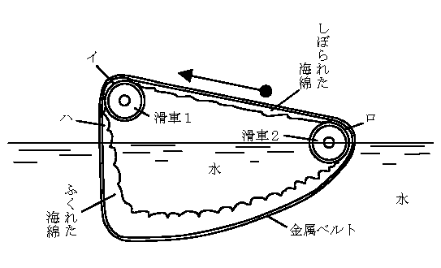

やけ
東助少年は手に
東助の方は、今日はどうしても、しおからとんぼか、おにやんまを、それからどんな種類でもいいから、あげはのちょうを捕る決心だった。ヒトミの方は、ぜひ、かや草と野菊とをさがしあてたいとおもっていた。
だが、二人のもとめているものは、いじわるく、なかなか手にはいらなかった。
「だめだわ、東助さん。こんなにさがしてもめっからないんだから、もうあきらめて帰ろうかしら」
と、ヒトミががっかりした調子でいった。
「いや、だめ、だめ。もっとがんばって、さがしだすんだよ。これだけ草がはえているんだから、きっとどこかにあるよ」
「そうかしら。だって東助さんも、まだとんぼがつかまらないんでしょう」
「とんぼのかずが少いんだよ。それに、みんな空の上をとんでいて下へおりてこないんだ」
「やけ野原でさがすことが無理なんじゃないかしら」
「だってしようがないよ。この近所で、やけ野原じゃないところはないんだから」
「それはそうね」
ヒトミは、まぶしく光るやけ野原を見まわして、ため息をついた。東助は、またとんぼににげられてしまった。
「ヒトミちゃんの理科の宿題論文は、なんというの」
東助は、きいた。
「理科の宿題論文？ それはね、『ユークリッドの幾何学について』というのよ」
「ユークリッドの幾何学についてだって。むずかしいんだね」
「それほどでもないのよ。東助さんの方の宿題論文はなんというの」
「僕のはね、『空飛ぶ円盤と
「空飛ぶ円盤と人魂の関係？ まあ、おもしろいのね」
「おもしろいけれど、僕はまだどっちも見たことがないんだもの。だから書けやしないや」
「あたしね、人魂の方なら一度だけ見たことがあるの」
「へえーッ、本当？ ヒトミちゃんは本当に人魂を見たことがあるの。その人魂は、どんな形をしていたの、そして人魂の色は……」
「あれは五年前の八月の晩だったわ。お母さまとお
急に人魂の話をやめたヒトミが、空の一角を
「え、なに？ どこさ」
たおれた石門の上に腰を下していた東助が、おどろいて立上り、ヒトミの指す方角を目で追った。
「あそこよ、あそこよ。ほら、空をなんだか丸いものがとんでいるわ。お尻からうすく煙の尾をひいて――」
「あッ、あれか。あ、飛んでいる、飛んでいる。飛行機じゃあない。へんなものだ。へんなものが空を飛んでいく」
東助少年は見ているうちに、
「東助さん。あれが、『空飛ぶ円盤』じゃない？」
ヒトミがさけんだ。
「そうかしらん。僕も今そう思ったんだけれど、『空飛ぶ円盤』ともすこしちがうようだね。だってあれは円盤じゃないものね。ラグビーのボールを、すこし
「西洋のお
二人がそういっているうちに、その
たしかに落ちたことは、二人が目でも見たし、またそのあとで地震のような地ひびきがして、二人の足許から気味わるくはいあがってきたことでも知れる。
東助とヒトミは、恐ろしさに
それから後、もっと恐ろしいことが起るのではないかと、二人はかくごしていた。
しかしその後、べつに恐ろしいことは起らなかった。音もせず、光りもせず、静かな広々とした一面のやけ野原がねむっているだけのことであった。
東助とヒトミは、ようやく気をとりなおして、左右にはなれた。そして二人は、おたがいが今見たことについて語りあった。二人は全く同じものを見、そしてそれが落ちた場所についても意見が一致することをたしかめた。
「いってみようか、落ちたところへ。きっとあれは『空飛ぶ円盤』の一種だろうから、今見ておけば僕の書く論文の参考になるからねえ」
東助は元気づいて、そうまで思うようになった。恐怖の念は、いつの間にか消えてしまい、それにかわって、ぜひそのふしぎな物体を近くで見たいという好奇心が、むくむくとあたまをもたげてきた。
ヒトミも、もともとメソ子ちゃんの組ではなく、なにごとにもどんどんとびこんでいく方の明るい性質の少女だったから、東助がそういいだすと、ヒトミもおもしろがって、早くあそこへいってあれをひろいましょうといって、足を向けた。
二人は
二人の足は、しだいにおそくなった。それは、あのあやしい物体の落ちた近くまできたので、気味がわるくなったわけだ。二人はいつの間にか、としよりのように前かがみになり、全身を神経にして、用心ぶかく一足一足近づいていった。
たしかに、ここだと思うところまできた。しかるに、あのあやしい物体は見つからないのであった。
「へんだねえ。たしかにここんところへ落ちたんだがね。ねえヒトミちゃん」
「そうよ。むこうから見ると、あの太い
「でも、見つからないね、まさか消えてしまうはずもなし、どうしたのかしらん」
二人は、ふしぎに思って、そこらをさがしまわった。が、ないものはなかった。あるのは瓦や石っころやさびた鉄ばかり。二人は夢を見たのであろうかと、うたがった。
そのときヒトミが東助をよんで、地上を指した。
「東助さん。ここに穴があいているわ。この穴の中へころげこんだんじゃあない」
「なるほど、穴があるね。これかしらん」
と、東助が穴の方へ近よったとき、ふいに足の下がくずれだした。ヒトミが手をだして東助をすばやく
土がくずれて、あとにできた穴は大きかった。
ここまでつきとめたことだから、二人はもういくところまでいく決心をした。
二人は持っていた捕虫網やどうらんをそこへおくと、砂や石ころのざらざらする階段を、そろそろと下りていった。
長い階段をようやくおりきると、そこはがらんとした地下室になっていた。そしてどこからか一道の光がさしこんでいて、しばらくすると二人の目がやみになれて、室内をどうやら見定めることができるようになった。
このだだっぴろい地下室には、なんにも残ってなかった。――いや、一つだけあった。奥の
「あれが空を飛んでいたんだ」
「そうよ。やっぱりこの穴へ落ちこんだのね。なんでしょう、樽みたいだけれど……」
「そばへよって、よく見てみよう。だけれど時限爆弾じゃないかなあ」
「そんなものが今空をとんでいるはずはないわ。きっと樽よ。中にお酒か、
「よくばっているよ、ヒトミちゃんは。そばへよってから、どかんと爆発して、死んでしまっても知らないよ」
「だって、ただの樽の形をしているわ。きっとぶどう酒が入っているのよ」
「ぶどう酒が入っている樽が、どうして空をとぶんだい。へんじゃないか」
そういっているとき、とつぜん樽に小さい
「あッ」
「東助さん」
とつぜんの変事に、二人はしっかり
その時、樽の煙突からすうッと白い煙がでて、高くのぼった。と、その煙の中から、大きな人の顔があらわれた。鼻の高い、ひげもじゃの、あまり見かけない顔だった。
何者であろうか、その
ほんとうのことをいうと、東助とヒトミは気をうしなう一歩手前までいった。しかしそれをようやくがんばることができた。二人は見た。樽の煙突の中からたちのぼった白い煙の中から、背の高い怪人があらわれて、そばに立ったことを。
「あなたがた、こわがること、ありましぇん。わたくし、ポーデル博士であります」
「わたくし、あなたがたにあうために、この土地へきました。あなたがたを、おもしろいふしぎな国へあんないいたします。あなたがた、わたくしについてきます、よろしいですか」
ポーデル博士は、そういって、しきりに手を樽の方へふってすすめる。
東助とヒトミは、そのときまで声をだすことさえできなかったが、あまりおそれていてもよくないと思ったので、東助はヒトミに目くばせをして、怪人の方へすすみよった。
「あなたは、いったいどなたですか。ポーなんとか博士とおっしゃいましたが、どこの国の方ですか」
東助は、なるべく気をおちつけようとつとめながら、一語一語をはっきりいった。
「わたくし、ポーデル博士です。ポーデル博士という名前、よびにくいですか。それならば、ポー博士でもかまいましぇん」
「どこの国の方ですか」
「わたくしの国？ ははは、それは今いいません。しかしやがて自然に分りましょう。けっしてあやしい者ではありましぇん。安心して、ついてくるよろしいです」
「いや、あなたを信用することなんかできません。あなた――ポー博士と名乗るあなたはいろいろ、あやしいことだらけです。第一、さっきから見ていれば、あなたは白い煙の中から姿をあらわしました。その白い煙は、この小さな樽の中からでてきました。この樽は、あなたの身体の四分の一の大きさもありません。その中から、そんな大きな身体がでてくるなんて理屈にあわないことです。ですから僕たちは、あなたをお
「ははは。あなたがた、つまらない心配しています。わたくし、決してあやしくない。お化けでもありましぇん、魔法使いでもありましぇん。あなたがたがあやしいと思うこと、本当は決してあやしくありましぇん。あなたがた理科の勉強が足りないから、そう思うのです」
「お待ちなさい、ポーデル博士。僕の問いをごまかしてもだめです。なぜ博士の大きな身体が、小きな樽からでてきたかをわかるように説明して下さらない間は、何一つ信用しません」
東助は、なかなかゆずらなかった。
すると怪人博士は、大きくうなずいてから、ヒトミの方を見ながらいった。
「あなたがたは、この世界をユークリッド幾何学の空間であると考えていますね。しかしそれはまちがいです。ユークリッドでない空間、つまり、非ユークリッド空間というものが本当にあるのです。それですよ、わたくしが今でてきたのは。この世界と、樽の中の世界とは、非ユークリッド空間でもって、つながっているのです。うそだと思ったら、あなたがた、わたくしのいうとおりにして、この煙突から樽の中へ入ってみる、よろしいです。そこにはびっくりするほどの広々とした世界があります。そこへ案内いたしましょう」
ポーデル博士は熱心を
あまりのふしぎにうごかされ、東助とヒトミは思いきって、その樽の中にはいってみようかという気になった。
小さい樽の中に、うまくはいれるだろうか。またそのふしぎの樽の中には、どんなにおどろくべき世界が待っているのだろうか。
ポーデル博士の話のおもしろさにつられて、東助もヒトミも、ふしぎの樽の中へ入ってみようと思った。
しかし、なんだか気味がわるい。
「では、三人で、手をつないではいりましょう。東助さん、先へはいります。東助さんの手、ヒトミさん、にぎります。するとヒトミさん、次に樽の中へはいります。ヒトミさんの手、私にぎります。すると三番目に、私、はいります。これ、よろしいではありましぇんか」
博士は、三人が手をつなぎあってはいることを、すすめた。
「だって、こんな小さい穴の中へ、ぼくの大きなからだがはいるはずはないです」
「まだ、あなた、そんなこといってますか。私のことば信じなされ。その小さな樽の中にきっとはいれると思いなさい。そうしてとびこむ、よろしいです。ふしぎに、はいれます。うそ、いいましぇん」
「そうかなあ」
「平行線は、どこまでいっても
東助には、博士のいうことが、よく理解できなかったけれど、平行線がやがて交わるものなら、やがてからだも小さくなるような気がしたので、思いきって樽の小さい穴へとびこんでみることにした。
「ではお先へ、ワン、ツー、スリー」
東助は、思いきって、小さい穴の中へとびこんだ。水泳のとびこみのように、手と頭の方を先にして。……ただし左手はヒトミと手をつないでいるので、右手だけを先にのばした。
と、東助の頭は、急にくらくらとなった。耳もとで、すごい雷のような音を聞いた。しかしそれもほんのちょっとの間ですんだ。次は急に気もちがよくなった。
さわやかな音楽が耳に入った。すばらしいいい香が、はなの中へはいってきた。あたりが明るくなった――見なれない部屋の中に、彼は腰をおろしていた。
あまり広くない部屋ではあるが、まわりにいっぱい器械がならんでいた。そうだ、どうやら大きな飛行機の操縦室のようだ。しかしそれにしても、あまりにりっぱな複雑な器械がいっぱい並んでいる。こんな大仕掛の操縦室をもった飛行機は、よほど大きい飛行機にちがいない。
「東助さん。なにをぼんやり考えこんでいらっしゃるの」
ヒトミの声だった。
うわッと、われにかえってふりかえると、いつの間にはいってきたのか、ヒトミもいるし、ポーデル博士もにこにこと、ひげだらけの顔をうごかして笑っている。
「どうです。私、いったとおり、ありましょう。小さい穴、はいれました。そして中、このとおりなかなか広い」
博士は得意のようだ。いつの間にか服がかわっていた。探検家がアフリカの猛獣狩にいくような半パンツの軽装になっている。頭の上には、四角い大学帽のかわりに、白いヘルメット帽がのっている。そして口には、とうもろこしでこしらえたパイプをくわえて、煙草のけむりをぷかーり、ぷかーり。
東助は、自分のとおってきたあとを考えて、ふしぎでしかたがない。
「ここは樽の中ですか。それとも、別の場所ですか」
「もちろん樽の中です」
すると、自分たちのからだは小さくちぢまったことになるのかな。
「さあ、私がこれからこの樽を操縦しておもしろい国へ案内しますよ。あなたがた、そこのいすに腰かけて十五分ほど待つ、よろしいです」
そういうと博士は、操縦席らしいいすの一つに腰をかけた。そしてレバーをうごかしたり、操縦
ああ、今、樽がとびだしたのだ。
どこへいく、奇妙な飛行樽は？
博士は、その行先について、なにも語らなかった。いってから、目をあけて見れば、ひとりでによくわかるといった。
東助とヒトミとは、向こうへいきつくより前に、すこしでもその国がどんなところであるか知りたかった。そして博士に、いくどもねだった。
博士は怒りもせず、ますます上きげんに見えた。そしてやっとパイプのすきまから、すこしばかりしゃべった。
「世界には、だれが住んでいますか」
「世界にですか。人間が住んでいます」
博士の質問に、東助がこたえた。
「人間だけですか。蟻はどうですか。桜の木はどうですか」
「ああそうか。さっきの答を訂正します。世界にはたくさんの動物が住んでいます。人間もふくめて動物の世界です」
東助は、ヒトミをふりかえって、この答は正しいだろうと、目できいた。ヒトミはうなずいた。
「そうでしょうか」と博士はいった。
「では、もう一つききます。地球の上でうごきまわっているのは何ですか」
まるで「話の泉」のようであった。
「それは動物です。人間や馬や鳥や魚や、それから
これはヒトミが答えた。
「その外ありましぇんか」
「動物の外、うごいているものはありません。動物とは、動くものと書くんですから、動くものは動物です」
ヒトミが自信をもっていった。
「そうでしょうか」と博士はいった。
「ではもう一つだけたずねます。地球の上で、感覚をもっているものは何でしょうか。いきたいと思った方へいったり、寒くなれば寒さにたえるように用心したり、おいしい空気をすったり、のみたければどんどん水をのんだりもする。それは何でしょうか」
「それは動物です」
「あたしもそう思います。動物です」
二人は答えた。それにきまっているからだ。
「そうでしょうか」
と、博士は、こんども疑いのことばで答えた。
なぜ、そんなにわかりきったことを疑うのですか。――と、東助もヒトミも博士にききかえしたいくらいだった。
「世界は動物のもの。地球の上で動くのは動物。感覚があり、したいことをするのも、また動物。あなたがた、そういいましたね。――よくこのことをおぼえていて下さい。あとになって、私はもう一度、あなたがたに、同じことをたずねます」
博士は、なぞのようなことをいった。
「話をしているうちに、もうきました。そのふしぎな国へ下りていきます。ちょっと目まいがするかもしれましぇん。すこしですから、がまんする、よろしいです」
博士のことばが切れると同時にとこからともなく、へんな音響がきこえはじめた。それは
が、間もなくそれは消えた。いやな音も消えた。震動もなくなった。博士がのっそりと操縦席から立上った。
「いよいよ、あの国へきました。これから下りていくのですが、その前に、私たちは特別の注射をいたします。この注射をしていかないと、おもしろいもの見られましぇん。腕をおだし下さい」
博士の手に、いつの間にか注射針がにぎられていた。
もうここまできては、博士のいうことをきくしかないので、東助もヒトミに目くばせして、注射をしてもらった。それはべつに痛くもかゆくもない注射だった。気分も大してかわらなかった。ただなんとなく気がのびのびして前よりは、いい気持だった。
「それでは、こっちからでましょう」
博士は先へ立って、戸を開いた。
直径二メートルほどの大きな円形の戸口があいていた。外はくらくてみえない。
博士に手をひかれて、東助とヒトミとは、ワン、ツー、スリーで外へとびだした。雷鳴のような音、息ぐるしさ。それらは前と同じようであった。
が、急にあたりが明るくなった。
太陽が頭上にかんかんとかがやいている。涼しいそよ風がふいてくる。見ると一面の砂漠であった。
ふりかえると、この前、地下室で見たと同じ形の小さい樽が一つ、砂の上にあった。そして白い煙をはいていた。この小さい樽の中からでてきたのかと思うと、ふしぎでならない東助とヒトミだった。
「ここはどこですか。どこに、おもしろいものがあるんですか」
「まだ気がつきましぇんか。あそこをごらんなさい」
博士が地平線をゆびさした。
東助とヒトミは、ゆびさされた方を見た。が、見る見る二人の顔におどろきの色がうかんだ。
地平線のかなたに、何が見えたか。
はじめは、地平線の上に、緑色の海があって、波が立っているように思われた。が、すぐそれはまちがいであると分った。地平線の上を、緑色のあやしい姿をした怪物が、さかんに踊りまわっているのであった。
それは、おそろしいほどたくさんの集団に見えた。
「なんでしょう、あれは……」
「こっちへくるわ。いやあねえ」
「なんですか、あれは。ええと、ポーデル博士」
東助は、うしろに立って、にやにや笑っている博士にたずねた。
「彼らは、今に、こっちへくる。来れば、それが何者だかわかるでしょう」
博士は、それ以上語ろうとはしなかった。
博士のいう「彼ら」とは、いったい何者であろう。二人が目をみはっているうちにも、彼らの集団は、だんだんこっちへ近づくのが分った。彼らは、頭の上に長い手をふりたてて踊りくるっている。みんな緑色の細いからだを持っている。赤い花みたいなもので、からだをかざりたてているのもあるようだ。
「あれ、何なの。あんな生きもの見たことないわ」
「あれで動いていないと、熱帯の林のようなんだけれどね。しかし林ではない。林はしずかなところだ。彼らは、それとはちがって、気が変になったように踊っている。いや、こっちへおしよせてくる。気持が悪いね」
ヒトミは、いつとなく東助の方へからだをよせて、手をしっかりにぎっていた。
彼らの姿が二人の方に近くなるにしたがって、彼らのいきおいのはげしさにおどろかされた。彼らは
その間にも、東助は彼らの正体をつかもうとして一生けんめいだった。
「ヒトミちゃん。あれは木だよ、
「ああ、気味がわるい。なんだって植物がうごきまわるんでしょう。あれは
「ふしぎだ、ふしぎだ。今までにあんな植物を見たことがない。話に聞いたこともありゃしない。ふしぎな植物だ。動物になった植物とでもいうのかしら」
東助もヒトミも、息をつめて、奇怪なる
彼らはますます近くなって、ふしぎな姿をはっきり見せた。すくすくと天の方へのびて、
と、いつの間にか
「なにをするんだ。こいつ……」
と、東助はヒトミを助けるつもりで蔓草とたたかった。しかし彼はかんたんに蔓草にまかれてしまった。二分間とかからないうちに東助は、蔓草のためぐるぐるまきにされてしまった。
ヒトミも東助も、
「た、助けてくれ……」
「助けて下さい。ポーデル先生」
「はっはっはっ。ほんとうに悲鳴をあげましたね。助けてあげましょう。しかし分ったでしょう。植物も動くということを。そして地球は動物の世界だというよりも、むしろ植物の世界だということを、植物にも感覚があるということ――三つとも分かりましたね」
「ええ。でも、彼らは特別の植物です。お化けの植物です」
「そうではありましぇん。ふつうの植物です。いまあなたがたに注射をすれば分ります」
博士は二人に注射をした。
するとふしぎなことがあった。今まで踊っていた植物どもは、急におとなしくなり、やがてぴったりしずまった。――それはどこにでも見られるしずかな
博士は、二人のからだから蔓草を切りとった。そして笑いながら説明をしてくれた。
「さっきここへきてから三十分にしかならないと思うでしょう。しかし本当は三年間たちました。つまり注射の力で、あなたがたは三年間をたった三十分にちぢめて植物のしげっていくのを見たのです。こうして時間をちぢめてみると、生物であること、よく動くことがお分りでしょう。どうですか。おもしろかったでしゅか。お二人さん」
東助とヒトミは、ほっと安心して、ため息をつくばかりであった。
「おいおい、もう目をさましても、いいじゃろう」
ポーデル博士の声に東助もヒトミも、ねむりから起こされてしまった。
ポーデル博士は操縦席に腰をおちつけ、しきりに計器を見ながら操縦
「ポーデル先生。こんどは、どのようなふしぎな国へ連れていって下さるのですか」
東助は、うしろから博士に声をかけた。
「これからわしが案内しようという先は、ちょっとかわった人物なんでねえ。君たちは気持わるがって、もう帰ろうといいだすかもしれんよ」
「大丈夫ですよ。ぼくは、いつもこわいものが見たくて、探しまわっているんですよ」
「あたしだって、こわいもの平気よ。ポーデル先生、そのかわった人物というのは一つ目
「うわはは、二人とも気の強いことをいうわい。いや、一つ目小僧やろくろッ首なのではない。また幽霊でもない。それはたしかに生きている人物なんだ。彼はすばらしく頭のいい学者でのう、大学教授といえども彼の専門の学問についてはかなわない。かなわないどころか、さっぱり歯が立たないのじゃ」
「先生、その方はどんな学問を専攻していられるんですか」
「オプティックス――つまり光学、ひかりの学問なんだ。光の反射とか、光の
「じゃあ、あたり前の学問ですわ。別にかわっていないと思いますわ」
「いや、大いにかわっている。それは君たちが実際ケンプ君――ドクター・ケンプというのが彼の名前さ。そのドクター・ケンプにじっさい会ってみりゃ、ただちにわかる。一目見れば分るのだ」
「ドクター・ケンプですね。はてな、その名前ならどこかで聞いたような気がするが……」
と、東助は考えこんだが、すぐには思い出せなかった。
「おお、この下だ。急降下するよ。目がまわるよ」
博士の声につづいて、
「もういいよ。外へでようや」
博士の声に、われにかえった二人だった。しずかだ。気持もぬぐったようになった。そこで一同は、例の非ユークリッドの空間に通ずる扉を開き、外へでた。
目の前に、古ぼけた洋館が建っていた。ペンキははげちょろけで、のきはかたむいていた。窓という窓には、かっこうの悪い
ポーデル博士は、空飛ぶ樽を、草むらの中にかくしたあとで、石段をのぼって玄関の前に立ち、上からぶら下っている
ことばは分らないが、ゆがんだ声が、家の中から聞えた。と、中でかけ金が外れる音がしてから入口の扉がすうーっと内側へあいた。
「この前、君にお話しておいたとおり、この二人が君にぜひあいたいというお客さんじゃ」
と博士は、家の中の人に、東助とヒトミを紹介した。二人は、あわてて家の中へおじぎをした。しかし家の中の人の姿は見えなかった。
「みんな入りたまえ。早く！」
ごつごつした声が、家の中からとびだした。
「お許しがでた。さあ入りたまえ、君たち」
博士にうながされて東助とヒトミは、家の中へとびこんだ。――だが奇妙なことに、玄関を入った廊下には、誰もいなかった。
「ポーデル先生。あのドクターは、どこにいらっしゃるんですの」
ヒトミが、そういってたずねたとき、きげんのわるい
そのかわりに――というと、ちょっとおかしいが、玄関の扉がひとりでに動きだして、ばたんとしまった。そしてかけ金が、ひとりでに動きだして、がちゃりと音をたてて
ヒトミはもちろん東助も、頭から
「幽霊屋敷……」
「目に見えない幽霊がいるんですね。何者の幽霊ですか」
「さわいでは、いけないね。この家のご主人に対して失礼だから」
と、博士は冷やかに二人にいった。
そのときまたもや例のふきげんな咳ばらいの声がそばで聞え、それからたしかに人間がたっているにちがいない足音が、とんとんとんと廊下を奥へ伝わっていった。が、それは足音だけのことでやっぱり姿はなかった。
「ドクター・ケンプは、いつもぶっきら
博士が二人の子供に注意をあたえた。
「あ、思い出したぞ」と東助がこのとき叫んだ。
「ドクター・ケンプは透明人間なんでしょう。ねえポーデル先生」
「ドクター・ケンプといえば、透明人間にきまっているさ」
と博士は分り切ったことを聞く
「いったい彼は、どんな学問を使って、からだを見えなくすることに成功したか、それが大事なことなんだから、ぜひたずねてみたまえ」
廊下の奥の左側の扉が、ひとりでに内側へ開いた。もう二人は、前ほどおどろかなかった。そのかわり、早くケンプの前へ立って、ほんとうにドクターのからだが透明で、何も見えないのかどうかをたしかめたくなった。
「入口をまっすぐ入って、この三つの椅子に腰をかけたまえ。勝手に部屋の中を歩きまわることはごめんこうむる」
部屋の中からドクターの声がし、そして椅子が、生きているようにがたがたと肩をふり、足をふみならした。
入ってみると、この部屋はドクターの化学実験室だと見え、天井は高く、まわりの白壁は薬品がとんだと見えて茶色に汚れた所が方々にあった。まわりの壁は、薬品戸棚と、うず高くつみあげた書籍雑誌で
東助も、ヒトミも、目を丸くしてこの実験台の異風景に見とれていたが、とつぜん、一箇の
「あッ」
その架台は横の方へいって再び台の上へ足をおろした。次はビーカーがいくつも、ひとりでに台の上からまいあがって、台の
と、とつぜんじゃーッと音がして、栓から水がいきおいよく流れだした。すると大きなビーカーが動きだして、水を受けた。
水はビーカーの中に八分目ぐらい入った。水道の栓がひとりでに動いて、水がとまる。こんどはビーカーが実験台の上へもどってきた。と、アルコール・ランプの帽子がとび上って、台の上へ下りた。と、引だしからマッチがとびだしてきて、一本の軸木がマッチ箱の腹をこすった。軸木に火がついた。その火はアルコール・ランプの
あまりの奇怪なる器具の
「ケンプ君。どうして君は、君のからだを透明にすることができたのかね」
ポーデル博士が、台の向こうへ声をかけた。
姿のないドクターは、立てつづけに咳ばらいをした。
「透明というんではない。ほんとうは見えない人だ」ドクターは、怒ったような声で、ぽつんぽつんと
「その研究には、永い年月をかけた。莫大な金を使った。ぼくは
ぼくは、のこり少い持物をほとんど全部
ぼくは元気をだして最後の研究にとりかかった。そのときぼくは、自分の健康がもうとりかえしのつかない程そこなわれているのに気がついた。それからのくる日くる日を
見えない人ドクター・ケンプは、一息ついた後で、ふしぎな物語をつづける。
「ものに光があたったとき、その形が見えるのはなぜか。それは光がその物体にあたって反射するからだ。あるいは光が中へはいって屈折するからだ。もし光があたっても、光が反射もしなければ屈折もしなければ、ものガラスの形は全然見えなくなるのだ。……
その硝子板を水の中につけてみる。と、こんどは前の場合よりずっと見えにくくなる。これは水の屈折率が硝子の屈折率とほとんど同じだから、光は硝子板をまっすぐに通りすぎる。そこで硝子板の形が見えにくくなるのだ。……もし硝子板をこなごなにこわした上で、水の中に入れてみる。するとその硝子の粉は、ほとんど完全に見えなくなる。これが偉大なるヒントだ。だからもし人間のからだの屈折率を、空気と同じにすることができればいいんだ。そして同時に、光を反射もしないし吸収もしないようにする。ああ、すばらしい思いつきではないか。そしてぼくは遂にその偉大なる仕事をやりとげたのだ。ごらんの通りだ。
ここにあるぼくの身体が見えるかい。硝子板は見えるが、ぼくの身体は、どう
ごとごとごとと、ビーカーの中の湯が
「ぼくは、さっきもいったように、第一番に一本の紐を見えないものにした。その次、第二番目には、動物にそれをためして見た。一ぴきの仔猫が、いつも窓の向こうへのぼって日なたぼっこをしていた。ぼくはその仔猫を実験に使おうと思った。ぼくは、そっと
仔猫が満腹して、椅子の上で
だが仔猫の姿はまだ完全に見えなくなったわけではなかった。うすい青い丸い玉が二つ、台の上三センチばかりのところに宙に浮んでいた。それは猫の眼玉だった。なかなか色のぬけないのは、眼玉のひとみの色と毛の色、それから血の色だった。だから仔猫の眼玉が完全に消えてしまったのは二十時間後だった。
ぼくは手さぐりで、仔猫をゆわえてあるバンドをといた。そして部屋の隅の箱の中に移した。それからぼくは睡った。この実験のために非常に疲れていたから。
長い睡りから目をさました。猫の声がうるさく耳についたからだ。起きあがったが、猫の声はするが、姿は見えない。ぼくは直ぐ気がついた。『しまった、猫を紐でしばっておくんだった』と。ぼくはそれから部屋の中をぐるぐるまわって、猫の声を目あてに追いかけた。だが、なかなかつかまらない。そのうちにぼくは、
だからこの世の中に、見えない猫が一ぴき、すんでいるのだ。気をつけて下さいよ、その猫にいきあたったら。いつその猫に、のどをかき破られるか分らないんだ。気が変な猫になっているのだからね。……え、何か今、あなたがたの足の下を走ったって。ああ、あの透明猫かもしれない」
そのとき東助とヒトミは、たしかに猫の声を聞いた。この部屋の戸棚の上に。……だが猫の姿も見えなかったし、語り手の姿も同様に全く見えなかった。二人の前に見えるのは、ビーカーから高くたちのぼっている
ふしぎなポーデル博士の、ふしぎな国々への案内はつづく。
東助とヒトミは、ポーデル博士の操縦する樽ロケット艇にのって、ふしぎな旅をつづける。
「博士。こんどはどんなふしぎな国へつれていって下さるんですか」
東助が、顔をかがやかして、きいた。
「こんどは、なかなか
「深刻なところって、どんなところですの」
ヒトミも座席から、からだをのりだす。
「
「あら、蠅の社会が深刻なんですか」
「蠅の考えていること、人類にとってはなかなか深刻あります。これから私案内するところは、蠅が作り、そして蠅が
「まあ、すてき。蠅でも劇をするんですの。しかもテレビジョン劇なんて、あたらしいものを」
「人類は、人類のこととなるとわりあいによく知っていますが、その他のこと、たとえば馬のこと、犬のこと、兎のこと、毛虫のこと、蠅のことなどについては、あまりに知りません。それ、よくありません。蠅が何を考えているか、それらのこと、よく知っておく、はなはだよろしいです」
ポーデル博士は、いつになく深刻な顔つきになって、そういった。
「その蠅のテレビ劇を見るには、どこへいけばいいんですか」
「ヒマラヤ山の上へのぼります。そして山の上から
博士のいったとおり、樽ロケット艇は気持よく、ゆっくりと着陸した。
「外へでるのですか」
「いや、外はなかなか寒い。今でも氷点下三十度ぐらいあります。蠅のテレビ劇は、この樽の中で見られます。この器械がそれを受けてこの四角い幕に劇をうつします。また蠅のいうことばを日本語になおしてだします」
「蠅のことばが、日本語になるんですの。そんなことができるんですか」
「できます。ものをいうとき、何をいうか、まず自分が心の中で考えます。考えるということ、脳のはたらきです。脳がはたらくと、一種の電波をだします。その電波を
「わかったようでもあり、わからないようでもあり」と東助は首をふって「それより早く、その蠅の劇を見せて下さい。いや見せて聞かせて下さい。その方が早わかりがします」
「よろしい。すぐ見せます。あなたがた、
そういって博士は、後向きになって、蠅の脳波を受信するテレビ受信機のスイッチを入れ、たくさんの
すると、四角い
「何かでましたね。しかし何だかはっきりしませんね」
東助はいった。ヒトミも前へのりだす。
「今もうすこしで、はっきりします。お待ち下さい」
なるほど、そのとおりだった。間もなく急に画面がはっきりし、くさったかぼちゃの上に五六ぴきの蠅がたかっているところがうつりだした。
と、声も又はっきりしてきた。
「アナウンスをいたします。これは『原子弾戦争の
「とにかく人類は
「まったくそのとおりだ」
「そうでしょう。数からいうと、人類なんか、われわれ蠅族にくらべて一億分の一の発言権もないはずだ。ところが人類のすることはどうだ。
「まだある。蠅取紙という、ざんこくなとりもち地獄がある」
「ディ・ディ・ティーときたら、もっとすごい。あれをまかれたら、まず助かる者はない」
「あれは、まだ値段が高くて、あまりたくさん製造できないから、人類は思い切ってわれわれにふりかけることができない。まあそれでわれわれは皆殺しにあわなくて助かっているんだが、考えるとあぶないねえ」
「人類は、どこにわれわれ
「そうだ。そのとおりだ。人類をのけたすべての生物は、人類に会議をひらくことを申込み、その会議の席でもって平等の権利を、人類にもう一度みとめさせるんだ。そして人類を、小さいせまい場所へ追いこんでしまわなくてはならぬ」
「大さんせいだ。蚊族、蝶族、蜂族などをさそいあわして、さっそく人類へ会議をひらくことをしょうちさせよう」
「それがいい。そうでないと、われわれはほろびる」
「やあ、諸君は、何をそんなに赤くなって怒っているのか」
「おお、君か。おそかったね。さあ、ここに席がある」
「ありがとう。……ちょっと聞いたが、また人類の横暴を攻撃していたようだね」
「そうなんだ。だからひとつ地球生物会議をひらかせ、人類をひっこませようと思うが、どうだ」
「もうそんなことをするには及ばないよ。人類はもうしばらくしたら亡んでしまう。人類は自分で自分を亡ぼしかかっている」
「ほんとかい。そんなことを、どこで聞いてきたのか」
「これは私の推論だ。いいかね、人類は最近原子弾というものを発明した。それは今までにないすごい爆発力を持ったもので、たった一発で、何十万何百万という人間を殺す力がある。そういうすごい原子弾を、人類は競争でたくさんこしらえている」
「ふーん、それはすごい。われわれはもちろん殺されてしまうね」
「それはそうだが、まあ待て。人類は亡びるが、われわれは亡びないんだ。というわけはやがて人類同士でこの次の戦争を始めるとなると、こんどはもっぱらこの原子弾を使う戦争となるわけだ。これはすごいものだぞ。戦う国と国とが、たがいに相手の国へ原子弾の雨を降らせる」
と、ものすごい原子弾炸裂 の音響があとからあとへとつづく。そして原子弾をはこぶ無人ロケット艇 の音がまじって聞える。また地上からは、死にいく人々のかなしい呻 き声がまいあがる。サイレンの音。高射砲の音。無電のブザーの音、聞えてはとぎれ、とぎれてはまた弱く聞えだす。と、また次の原子弾炸裂音が始まる。
「すごいじゃないか。おやおや、さっきまであった大都市が、影も形もないぜ。見わたすかぎり「今の爆撃で、五百万の人間が死んだね。生きのこっているのはたった二十万人だ。しかしこの人間どもも、あと三週間でみんな死んでしまうだろう」
「われわれ蠅族も、そば
「しかしわれわれの全体の数からいえば、いくらでもない。ところが今殺された五百万の人類は、人類にとっては大損失なのだ」
「なぜだい。人類はもともと数が少いからかい」
「いや、そうじゃない。今殺された五百万人の中には、あの国の知識階級の大部分がふくまれていたんだ。一度に、知識階級の大部分を失ったことは、たいへんな
と、またもや原子弾の炸裂音と死んでいく人々のさけび声がする。但し、こんどは遠方から聞える。
「やられた、やられた。この国はもう実力を失った。おしまいだ」「どうしたんだね。どこだい、今の爆撃された場所は……」
「あれはね、この国の秘密の原子弾製造都市だったんだよ。ほら、見える。すごいね。原子弾が地中にもぐって炸裂したんだ、あのとおりどこもここも掘りかえされたようになっている。製造機械も、原子弾研究の学者も製造技師もみんな死んでしまった。この国は、もう二度と原子弾を製造することはできない。おしまいだ」
「
「さあ、どうかね。この国だって、おとなしく原子弾にやられ
チリチリチリンと電話のベルが鳴る。
「ああ、もしもし」「ああ、もしもし。ああ君だね。えらいことが起ったよ。こっちの首都は、さっき原子弾の攻撃をうけて全滅となった。それからね、原子弾工場地帯が十カ所あったが、それが一つ残らず攻撃を受けて、器械も技師もみんな煙になって消えてしまったよ。もうこの国はだめだ。生き残っているのは、知識のない人間ばかりだ」
「そうだったか。やっぱりね」
「やっぱりね、とは？」
「こっちの国もそのとおりなんだ。ああ、今ぞくぞく情報が集ってくるがね。こっちのあらゆる都市や地方が、無人機にのっけた原子弾で攻撃を受けているよ。人類の持っていた科学力はことごとく破壊された。知識のある人類は、みんな殺されてしまった。ああ、人類の没落が始った。人類の没落だ。ざまァみやがれ」
「やーい、人類。ざまァみろ。さあ、この
「そうだ。さしあたり、
「窓の網戸をてっぱいさせるんだ。われわれの交通を妨害することはなはだしいからね」
「これから、われわれの仲間を一匹たりとも殺した人間は死刑に
「死刑だけでは手ぬるい。死刑にした人間の死体を、われわれ蠅族だけで喰いつくすんだ。それゆけ」
驚きの曲が鳴りだす。そして……
「アナウンスいたします。このところ一千年たちました」「はっはっはっはっ」
「うわッは、はッはッ」
「ほほほほ。ほほほほ」
「ははは、愉快だ。もう
「愉快、愉快。人類も滅亡したし、ライオンも虎も、牛も馬も羊も犬も、みんな死に
「うわーイ。ラランララ、ラランララ。ひゅーッ」
「わが蠅族の地球だ。世界だ。はっはっはっはっ。人間なんかもう一人もいやしない」
終幕の音楽。
「アナウンサーです。劇『「どうでしたか、東助君、ヒトミさん。
ポーデル博士がたずねた。
東助とヒトミは、それにすぐ答えることができなかった。二人の眼には、涙がいっぱいたまっている。
「おや、悲しいですか。何を涙しますか」
博士は、やさしく二人の頭をなでた。
「でもね、博士」と東助がとうとう声をだした。
「今の蠅の劇は、あんまりですよ。人類を意地悪くとりあつかっていますよ。人類は、そんなに
「しかし、原子弾の力、なかなかすごいです。人類や生物、全滅するおそれあります。地球がこわれるおそれもあります。安心なりましぇん」
「しかし、原子弾の破壊力をふせぐ方法も研究されているから、人類が全滅することはないと思います」
ヒトミも、考えをいった。
「しかし、ヒトミさん。地球こわれますと、人類も全滅のほかありません。原子弾の偉力とその進歩、はなはだおそろしいこと、世の人々あまりに知りません」
「ああ、そうだ。今の蠅のテレビ劇ですね。あれをみんなに見せたいですね。するとわれわれ人間は、蠅に笑れたり、ざまをみろといわれたくないと思うでしょう。だからもう人類同士戦というようなおろかなことはしなくなると思います」
「そうです。人類はたがいに助けあわねばなりません。深く大きい愛がすべてを解決し、そして救います。人類は力をあわせて、自由な正しいりっぱな道に進まねばなりません。人類の責任と義務は重いのです」
「博士がそういって下さるので、やっと元気がでてきましたわ」
「そうだ。僕もだ。けっして、蠅だけの住む地球にしてはならない。僕はみんなに、今の蠅の劇の話をしてやろう」
ポーデル博士は、
「博士。出発ですか」
東助が聞いた。
「そうです。また新しい目的地へでかけます」
「こんどは、どんな『ふしぎ国』へ案内して下さいますの」
ヒトミが博士にたずねた。
「こんどはね、ある宇宙艇の中に案内いたします」
「宇宙艇ですって」
「そうです。地球を後に、月世界へ向かう宇宙艇の中へ、あなたがた二人を連れてはいります。その宇宙艇は、だんだん宇宙を進んでいくうちに、だんだん重力がへってきます。――重力とは何か、あなたがた、知っていますね。どうですか、ヒトミさん」
「重力というと、あれでしょう。ニュートンが、リンゴが頭の上から地上へごつんと落ちたのを見て、重力を発見したというあれでしょう」
「そのあれです。しかしそれはどういうことなのでしょう。どんな法則ですか」
「ぼくがいいます。重力とは、物と物とがひきあう力です。そしてその力は、その二つの物の重さをかけあわしたものが大きいほど、重力は大きいです。それからその二つの物がはなれている距離が、近ければ近いほど、重力は大きいのです。もっとくわしくいうと、『距離の
「そうです、そうです。東助君、なかなかよく知っていますね。……ところで、さっきお話した宇宙艇ですが、はじめは地球に近いから地球の重力にひっぱられていますが、だんだん月の表面に近くなると、こんどは月の重力の方が大きくなります。そしてその途中のあるところでは、地球からの重力と、月からの重力とが、ほとんど同じに働きます。さあ、そうなると
「妙なことというと、どんなことですの。またこわいお話ですか」
「いや、こわくはありませんが、じつに妙なのです。つまりそのところでは、地球からの重力と月からの重力が同じであるが、この二つの重力は、方向があべこべなんです。地球の重力が、ま下の方へひくと、お月さまの重力は反対にま上へひくのです。下へと上へと両方へ、同じ力でひっぱられると、さてどんなことになると思いますか」
ポーデル博士は、にやにやと笑いながら、東助とヒトミを見くらべた。
「それじゃあ、同じ力でひっぱりっこだから、結局力が働いていないのと同じですね。二つの力を加えると、
東助が、こたえた。
「そのとおり。つまり、そのところでは、両方の重力が
「どんなことが起るでしょうね」
「物は、重さというものがなくなったように見えるでしょう。重さがなくなると、どんなことになりますか」
「大きな岩でも鉄の金庫でも、指一本でもちあげられるでしょうね」
と、東助がいった。
「そうです。もっと
「ああ、そうだわ。鉄でこしらえてある金庫に腰をかけて、お尻にうんと力をいれると、その金庫がまるで
「いや、ヒトミさん。それはちがいます。重力がなくなっても、そんなことにはなりません。なぜといって、重力がなくなっても、鉄の強さとか紙のやわらかさとかには変りはないのです。鉄はやっぱりかたいし、紙はそれにくらべるとやわらかいです」
「地球とか月とかの方へ引きつけている力がなくなるだけなんですねえ」
「まあ、そうです。そのほか、そこらにある物同士がおたがいに引きあっている重力もなくなるわけですが、この方は、地球又は月の重力にくらべると小さいから、はじめからないのと同じようなものです。地球とか月とかは、他の物――たとえば建築物や大汽船にくらべてみても、とてもくらべものにならないほど大きいから、重力も大きく作用するのです。さあ、それでは今から宇宙艇ギンガ号の中へ案内しますよ」
「ポーデル先生は、どうなさるんですか」
「わしもいっています」
「いっていますとは……」
「わしはその宇宙艇ギンガ号の乗組員の一人に変装していますから、どの人がわしであるか、向うへいったら、ぜひ探してごらんなさい」
と、博士がことばを結んだと思ったら、急にあたりが暗くなった。
停電のような闇だった。
どこからともなく、ごとごとごとと、機械のまわっている音が聞えてくる。と、あたりはだんだん明るさをとりかえしていった。
（おや、りっぱな部屋だ、広くはないけれど。……ここはどこだろうか）
と、東助はあたりを見まわした。
それは、大きな球の中を部屋にしたようであった。壁がまっすぐではなく、
正面に窓口みたいなところがあって、それに
その幕の間から、白い手がでてきた。
と、湯気のたっているココアのコップと、パイナップルの缶詰とがあらわれた。白い手は幕の中に引っこんだ。
すると横手の戸があいて、ウェイトレスがでてきた。見るとそれはヒトミによく似ていた。しかしずっと年は上で、大人に近かった。
ヒトミにちがいないのだが。……
「お待ちどうさま、三等機関士さん。どっちも上等の品ですよ。ほっぺたが落ちないように。……ほほほほ」
そういいながら、ココアとパイナップルの缶詰を、東助の前においた。
（えへへ、おれのことを三等機関士なんていったぞ）
「今日は、食堂はひまなんだね」
東助は、すらすらと、そういった。口がひとりで、ぺらぺらと動きだしたのである。ふしぎなこともあればあるものだ。
「もう五分もすれば交替時間ですから、みなさんいらっしゃると思うわ」
「ああ、そうか。僕は修理で時間外に働いたから早く
「どこを直していらっしたの」
「超音波の発生機だ。困ったよ。こんど故障を起すと、人工重力装置がきかなくなると思うね。そうしたら一大事だよ」
「そうすると、どうなりますの」
「そうするとね、今ちょうど地球の引力と月の引力が釣合っている重力
「まあ、たいへんね。そんなことになっては困りますわ。なぜもっと安全なように艇をこしらえておかなかったんでしょう」
「人工重力装置はぜったいに故障を起さないものとしてあったんだが、昨日大きな
「困ったわねえ。重力は停電のように、ぴしゃりと消えちまうものなの」
「いや、じわじわと重力がへってくるだろう。しかし七八分たてば重力は完全に消えるだろうね」
東助は、とくいになって話しながら、パイナップルの缶詰を、
「ああ、いい匂いだ。うまいぞ、このパイ缶は。……おや」
東助が、さっと顔色をかえた。
「どうなすったの、三等機関士さん」
「からだが急にふわっと軽くなった。あんたはどう。そう感じない」
「あらッ、へんよ。あたしも、からだがふわっと軽くなりました。どうしたんでしょうか」
「いよいよ、おいでなすったんだ」
「えっ、何がおいでなすったのですの」
「人工重力装置が故障になったにちがいない、重力がだんだん消えていく。あッからだが浮きあがってくる」
「あら、まあ。どうしましょう」
「なあに心配することはない。大丈夫。ただ、いろんなものが動きだすからね。……あッ、ほら、缶詰の中からパイナップルの
そのとおりだ。缶詰の外へ、黄色いパイナップルの輪切になったのが、まるで生き物のように、ぞろぞろとはいだしてきたのである。
「あれッ。パイナップルのお
と、ウェイトレスがびっくりして、とびあがった。すると彼女のからだは、すうっと天井の方へのぼっていった。足で床をけったので、重力がきいていないから、かるがるとからだが浮きあがったのである。
「あーれエ。君、どこへいく？」
東助はウェイトレスをつかまえようと思って立上ったが、そのときやはり床をけったので、彼のからだも、ふわーり。
「おや、おや」
「あいたッ」
ヒトミによく似たウェイトレスは天井に頭をぶっつけた。そしてその反動で、こんどはからだがすーうと下り始めた。上る東助と、下りるウェイトレスとが、途中でいきあって、両方から手をだしてつかまりあったものだから、こんどは二人のからだがからみついて、空中をふーわ、ふーわ。
そのとき、
「うわッ、助けてくれ」
といった者がある。つづいてがたんがたんと、机や腰掛のぶつかる音。
と、戸があいて、そこからふわーッとでてきたのは、顔中
「た、助けてくれ。コーヒーが、わしをおっかけてくる。あッ、あちちち。これはたまらん。助けてくれイ」
コック長は、一生けんめいに逃げる。彼のからだが、池の中へとびこむ
「あッ、あちちち。助けてくれ。コーヒーをとりおさえてくれ。やけど
その茶褐色の棒は熱いコーヒーだった。料理場の火の上にかかっていたコーヒー
そのとき、天井の
すると、反対の入口の扉があいた。そこから大ぜいの人が、この食堂へはいってきた。誰も彼もみんなからだを横にして部屋の中へはいってくる。まるで海でおよいでいるような
もちろん腰掛も机も、こんなときの用心に、しっかりと床に、ボールトとナットでしめつけてあった。
「おい。おいしいものを早くだしてくれたまえ」
「おや、ウェイトレスのヒトミさんやコック長がこんなところで、まごまごしているよ。パイ缶を一つとミルクセーキ一ぱい、早いところ頼むぜ」
と、食堂の空中を泳ぎながら、みんな註文をだす。
「はいはい。只今。しかし熱い料理や飲料は今、できませんよ。わしもみなさんも
そういいながら、髭のコック長は、蛙のような恰好で料理場へとびこんでいった。
とたんに、停電のように急にあたりが暗くなった。
「どうです。重力のない世界はおもしろかったですか」
いつの間にかポーデル博士が、操縦席からうしろをふりかえって、東助とヒトミに呼びかけた。
「ああ、コック長だ。博士はコック長に変装していたんですね」
「ははは。見つけられましたね」
「
「ははは、髭はとった方がよかったですね。さて君たちにたずねます。今訪問した世界は、宇宙艇の中の出来事でありました。ところが、もし、ああいうことが、地球の上で起ったとしたら、どんな現象が起るでしょうか」
「地球の上で生活しているとき、急に重力がなくなったら、どうなるかというんですか」
「そうです。どんなことが起りますか」
「分りました。私たちは鳥のように高い空をとぶこともできるし、ハンモックもないのに空中で昼寝をすることができますわ。たのしいですこと」
「海の水が陸へあがってくると思う。その海の水が雲のようになって空を飛ぶんだ。すごいなあ。アフリカのライオンが、いつの間にか空を流れて日本へやってくるようになる。そうですね、ポーデル先生」
「いや、もっとすごいことになります。あれをごらんなさい。地球に重力がなくなったときの光景が、
博士が指した壁のうえの映写幕に、地球の北半球の一部がうつっていた。地平線は丸く
「見えましょう。大都会が、今こわれていくところです。市民たちは、ずんずん地面から離れていくでしょう」
「なぜ人間や建物なんかが、あのように、どんどんとんでいくのですか。はげしすぎるではありませんか」
「はげしすぎることはありません。そのわけはこうです。地球は一秒間に三十キロメートルの速さで、空間を走っているのです。重力があれば、建物も人間も、地球の表面にすいつけたまま、このすごい速さで公転していくのですが、重力がなくなると、あのとおり、建物も人間も、あとへ取残されてしまいます。そして人間もけだものも植物も、みんな死んだり
「それはたいへんですね。重力がなくなることを願ってはいけませんね」
「ははは。ほんとうは重力はなくなる心配はありません。しかしやがて、人間が発明するであろうところの重力を減らす装置を、うんと使いすぎると、あのような
博士は、しんみりと警告をあたえた。
その日、東助とヒトミが、ポーデル博士の飛ぶ
「先生こんにちは。この羽織や袴をどうなさるのですか」
「やあ、君たち、きましたね。この着物を、わたし、着ます。そして日本人に
「日本人に化けてどうするのですか」
「あなたがたを、ふしぎな国へ案内するためです。今日は
「心霊実験会とは、どんなことをするのですか」
「待って下さい。先に変装をすませますから」
ポーデル博士は、鏡の前へいって、
「さあ、これでいい。日本人と見えましょう。わたくしは今日は、松永さんという老人に化けました。松永さんは、心霊実験会の会員として知られています。松永老人がいくと、その心霊実験会の方では安心して会場へ入れてくれます。会員でない人がいくと、なかなか入れてくれません。それでわたくし、松永老人に化けました」
「ああ、なるほど」
「私たち子供はいいんですかしら」
「あなたがた二人は、松永老人の孫あります。それなら大丈夫、入場許されます」
「なかなかやかましい会なんですね」
「そうです。心霊が
「心霊とは何ですか。霊媒とは何でしょうか」
「心霊とは人間の
「ああ、たましいのことですか。先生、人間が死んでも、たましいは残るのでしょうか」
「さあ、それが問題です。今夜の実験をごらんになれば、それについて一つの答を知ることができましょう」
「たましいなんて、人間が死ねば、一しょになくなってしまうもんだ。たましいがあるなんて、うそだと思うよ」
東助は、心霊の存在をうち消した。
「でも、あたし本当に、
「あれは火の玉で、人間のたましいじゃないよ。ねえ、先生」
「さあ、どうでしょうか」
いつになくポーデル博士は、今日ははっきり答えない。
「先生。霊媒というのは、どんなものですの」
「おお、その霊媒です。霊媒は特別の人間であります。そして心霊と人間との間にいて、連絡をいたします。つまり、じっさいには、心霊が霊媒の身体にのりうつるのです。心霊だけでは、声を発することもできません。ものをいうこともできません。そこで心霊は、霊媒の身体にのりうつり、霊媒ののどと、口とをかりて言葉をつづるのです。ですから霊媒がいてくれないと、わたくしたちは心霊と話をすることができないのです。どうです。お分りになりましたか」
「すると、霊媒人間が、心霊に自分の身体を貸すんですね」
「そうです」
「人間は、誰でも霊媒になれますの」
「いいえ。さっきもいいましたが、特別の人間でないと霊媒になれません。霊媒になれる人は、ごくわずかです。霊媒にも、すぐれた霊媒と、おとった霊媒とがあります。すぐれた霊媒は、心霊がらくにのりうつることができます。のり心地がいいのです」
「特別の人間というと、どんな人でしょう」
「心霊実験会のえらい人は申します。霊媒になれる人は、心霊というもののあることを信じる人、自分の身体から自分のたましいをおいだして、たましいのない
松永老人に化けたポーデル博士につれられて、東助とヒトミは、心霊実験会の会場へいった。それは東京の
会員たちは、もうだいぶ集っていた。
「おや松永さん。久しぶりですね」
「おお、これは
「ほう、それはようございました。お孫さんたち、ふしぎなおもしろいことが今日見られますよ」
金光会長は、顔の外までとびだしている白い
「霊媒の、今日の身体の調子はどうですか」
「調子はいいそうですよ。もっとも岩竹さんは、今日は身体の調子が悪いといったことは今までに一度もないですなあ」
「おっしゃるとおりです。岩竹
会員たちのこんな話から察すると、この会の霊媒の岩竹女史は、たいへんすぐれた霊媒らしい。
「皆さん。お待たせしました。実験室の用意ができましたから、あちらへどうぞ」
金光会長が一同をよびにきた。十四五名の会員たちは席を立って、奥へ入る。もちろんポーデル博士も、東助とヒトミも、とりすました顔でその中に
実験室というのは、十二三坪位の広さの板の間じきのがらんとした部屋だった。手前の方に、会員のすわるための椅子が二十脚ほど
壁には、まっ黒なカーテンが、長い
と、左手の廊下から、ぞろぞろと四、五人づれの人があらわれた。その中に、ひとりの女性が交っていた。
いちばんあとから、白い
「これから第九十九回目の心霊実験会をはじめます。本日は、みなさまのご熱望により、特に岩竹女史においでをねがいまして、有名なるゴングの心霊をここへよびだしていただき、いろいろとめずらしい実験をお頼みしたいと思います。それでは
そこで幹部たちは席を立って、まわりの黒いカーテンを引いて完全暗室にした。
そのとき室内に一つ十
「それでは、例によりまして霊媒の岩竹女史を、この椅子にしっかりしばりつけます。会員の方も四五名、ここへおいで下すって手をお貸し下さい」
会長が岩竹女史に対して、うやうやしく礼をした。すると女史はゆうぜんと立上って、中央のおそろしそうな椅子にどっかと腰をかけた。幹部たちは、太い
会長が女史に、白い
これでは女史は全く身うごきもできないし、さぞ身体が痛いことだろうと思われた。
「これ位でいいでしょう。岩竹先生、痛くありませんか」
「今日はずいぶん、きつくしばりましたねえ」
「すこしゆるめましょうか」
「いや、いいです。もう二三本しばってみて下さい」
また追加の綱でしばった。
「それでは、岩竹先生のお身体を、心霊にひきわたします」
髭の会長は前にでて、女史に向って
「かかったようです。では電灯を消します。二十分間、おしずかにねがいます」
会長が、ぱちっと電灯のスイッチをひねった。室内はまっくらになった。
一座はしずまりかえって、こわいようだ。そのとき会長のおさえつけるような声が闇の中にした。
「どうぞゴングさん。お現われ下さい。心霊ゴングさん。今どこにおられますか」
すると、またうーんとうなる声がして、
「わしは、もうここにきている」
と、いんいんたる声がした。岩竹女史のねむっているあたりだ。東助とヒトミは、急におそろしくなってポーデル博士にすがりついた。
「大丈夫、大丈夫。よく見ておいでなさい」
博士はやさしく肩をなでてくれた。
「もう、おいでになっていましたか。それでは何か見せていただきたいですね」
「よろしい。ラッパをとりよせて、吹いてきかせよう」
ゴングさんの声がしたと思うと、闇の空中にラッパの形をしたものが浮きあがった。全体が青白い光をはなっている。
東助とヒトミは、また博士にすがりついた。
そのラッパは宙をくるくるまわりだした。そのうちに大きく宙をとび始めた。会員の頭の上にもきた。会員の中には、あっとおどろきの声をあげたものもいる。
そのうちにラッパは正面へもどった。あいかわらず宙に浮いている。それが、ぷっぷくぷっぷくと、あやしげな音をたてて鳴りだした。やがてこれはゆれだした。そしてあいかわらずぷっぷくぷっぷくである。
と、とつぜんラッパは消えた。
するとこんどは大きな青い火の玉が二つあらわれた。それがくるくると闇の中をまわりだした。会員の頭の上を輪になってとんだと思うと、見えなくなった。
次はがたんがたんと音がして、小さい
「熱帯の島から、
ゴングの声だ。ゴングがうなる。と、こつんと音がして、青い蘭のような植物の形があらわれた。
「これが、そうだ。あとで調べてみなさい。まちがいない」
ゴングの声だ。
「わしが、この世にいたときの姿をちょっと見せる。今から約四千年前だ」
すると
「こんどは、にぎやかになる」
ゴングの声に、二つの火の玉に、ラッパに、蘭に小卓子などが、みんなゆらゆらひらひら飛び上り、まい下った。そのふしぎさは、息がつまるようだ。
そのとき、ポーデル博士の低い声が東助の耳にささやいた。
「この
東助は博士から渡された眼鏡を急いでかけてみた。
おお、これはふしぎ。くらやみの室内が、夕暮ぐらいの明るさで、はっきり見える。
東助はおどろいた。何よりもおどろいたのは、岩竹女史をしばりつけてあった椅子の中に、女史の姿はなかった。そしてその女史は、正面に立ち、両手を自由に使って、二つの火の玉が糸でつりさげられた長い二本の細竹をあやつって、しきりに会員の頭の上でふりまわしていた。
別の男が、やはり同じようにラッパを細竹につってふりまわしていた。そのラッパには長いゴム
もう一人の男は、エジプト人形をつった細竹をもって、ゆらゆらと左右にふっていた。
（ひどいインチキだ。なにが心霊ゴングだ）
と、東助は腹が立った。そのとき博士が眼鏡をかえすようにと、ささやいた。そしてこの会の最後まで、何もしらないことにして、さわいではいけないと注意をあたえた。
この実験会が大成功に終って、ゴングの霊は拍手におくられて消えた。そしてそのあとで会長が電灯をつけた。
すると岩竹女史は、いつの間にか前と同じ形で椅子に
「ああ、よくねむった。わたしは何かしたでしょうか。何も知らないのです」
としらっぱくれていった。
その会が終っての
「今日のふしぎ国探検は、インチキのふしぎ国探検でありました。あれを、会員のみなさんは、ほんとのふしぎだと思って信じているのです。困ったものですね」
「あんなに
「あれは綱ぬけ術という
「あの蘭は、熱帯産のものではなかったのですか」
「あれは本ものです。しかし温室に栽培してあるものを利用したのですよ。やっぱりインチキなやり方です」
このところしばらく、ポーデル博士にゆきあわない東助とヒトミであった。
二人は、この一週間ばかり、毎日のように
「ヒトミちゃん。どうしたんだろうね、ポーデル博士は」
東助は、いつになく博士のあらわれ方がおそいので、ひょっとしたら、あのような神か魔か分らないほどのえらいポーデル博士も
「ほんとに、どうしたんでしょうね。どこかたいへん遠方へ旅行していらして、なかなかここまでおいでになれないのじゃないかしら」
ヒトミは、博士の遠方旅行説をだした。
「でも、博士の樽ロケットはすごいスピードをだすんだから、どんなに遠くへいっても、すぐ引返してこられるはずだものねえ」
「大宇宙のはてへいっていらっしゃるんじゃないかしら。一度あたしたちが、大宇宙のはてはどんなになっているか見たいなあ、といったことがあるでしょう」
「そうだったね。それでもあの樽ロケットに乗って走れば一と月とかからないはずなんだがね」
そういっているとき、二人は空の一
「あ、樽ロケットが飛んでいる音だ」
その音は、ちょっとの間にどんどん大きさを増していった。と、二人の前へ、空からどすんと落ちてきたのは、例の樽ロケットであった。
「こんにちは。ヒトミさん。東助さん。おやおや、びっくりしていますね」
「先生。よくきて下さいましたね。ずいぶんおそかったですね」
「先生、ご病気だったんですの」
「ははは。わたくし、病気すること、決してありません。ほほほッ」
「じゃあ、どこか、うんと遠いところへいっておられたのですか」
「大宇宙のはてへいってらしたんですか」
「ちがいます、ちがいます」博士は首を左右にふって「じつは、いずれあなたがたを案内したいと思っていた
「ああ、四次元世界ですか。あのふしぎな高級な四次元空間の世界ですね。あんなところにいっておられたのですか」
「その何とかの世界は、ここから遠いのですか」
「遠いこともあり、近いこともあります。目の前に、その世界が、この世界と
「ははあ。すると海が荒れて交通が
「まあ、そうもいえますね。しかし四次元の世界とこの三次元世界の間には、天候が悪くなってしけになるというようなことはないのです。それはこれからあなたがたがいってみれば、よく分ります」
「あ、先生。あたしたちを、これから四次元世界とかいうところへ連れていって下さるのですか」
「そうですとも。しかし四次元世界だけではなく、二次元世界へも一次元世界へもご案内いたしましょう」
「四次元世界に、二次元世界に、一次元世界ですの。先生、三次元世界へは案内して下さらないのですか」
「ヒトミちゃん。ぼんやりしているね。三次元世界ならポーデル博士に連れていってもらわなくても、ぼくらが
東助があきれたような声でいった。
「あら、ちがうわよ。あたし、まだ三次元世界なんかへいったことはないわ。また、三次元世界へ
「あははは。ヒトミちゃん、あんなことをいっているよ。君はいったことがあるよ」
「ないわよ。ぜったいにないわよ」
「あるともさ。だって三次元世界といえば、横と
「あーら、そうかしら。ほんとですか、ポーデル先生」
「そうですとも、ヒトミさん。東助君のいうとおりです。でありますから、ヒトミさんも東助さんも三次元世界に生れた三次元の生物でありまして、今、三次元世界の中に暮しているのであります」
「まあ、おどろきましたわ。あたし三次元世界に住んでいるなんて、始めて気がつきましたわ」
「では、樽の中にはいりましょう。そしておもしろい旅行を始めましょう」
三人は樽の中にすいこまれた。
間もなく樽は横にたおれて、ごろごろころがりだした。煙突からぽっと煙をふきだしたと思ったら、早くも樽は長い煙の尾をひいて空中へまいあがった。そして白い雲の中に姿を消した。
樽ロケットの中の部屋は、いつものとおりで、べつにかわりはない。博士は操縦を自動操縦装置の方へきりかえ、操縦席からはなれて、東助とヒトミの前の椅子に腰を下ろしている。
「今わたくしたちが向っていく四次元空間とは、どんな世界か、分りますか。四次元とは何であると思いますか」
博士の質問である。
「横と縦と高さとがある世界が三次元の世界だと分っていますが、もう一つの
「まあ、
「その説にも、じつはいろいろ根拠があるのですが、とにかく四次元空間を考えるには、時間のことは考えに入れない方がいいでしょう。もっと分りやすい方法をとって、四次元世界を考えましょう」
「それなら、ぼく、知ってます」と東助がいった。「横と縦と高さの三つがあるものが立体ともいう三次元の物です。ぼくらの目につくものはたいていこれです。石も本も机も、三次元のものです」
「それから、どうなりますか」
「今、横と縦とだけしか見えない物があったとします。つまりその物には高さがないのです。これが二次元の物です。その中は二次元世界です。たとえば、うすい紙は、この部類に入れていいですね。それから水の上にうすく流した油の
「はい。あります。紙の上に書いた画も、その部類だといってもいいですね。それからみなさんが好きで、よくごらんになる映画、あれもそうです。つまりあれは、映写幕の上にうつっている横と縦とがあるもので、高さはありません。ですから二次元の物です。それでは一次元の物には、どんなものがありますか」
「一次元というと、横だけの寸法があって、縦の寸法も高さもないものですね。それは紙の上に書いた線のことだといえます。まだあるかしら」
「たくさんあります。四角な箱には六つの面がありますね。その面と面との
「ああ、そうだ。それは
「そうです。
「かんたんですね。しかし四次元の物というと分りませんね。横と縦と高さのほかに、何が考えられるかしら。もうほかに何にもないように思いますが……」
「もう一つ
「影でもないし、
「それはあなたがたには分らないのが、あたりまえなのです。なぜなれば、あなたがたは三次元世界に住んでいる三次元生物なんだから、一次元、二次元、三次元までの世界のことは分っても、もう一ついりくんだ四次元世界のことは、分らないのは、もっともなのであります」
「分らないのがあたりまえなんですか。しかし、ぜひ四次元の世界をのぞいてみたいですね」
「平面の上に住んでいる人間がいたとしましょう。つまり紙の表面だけの世界に、その人間は住んでいるのです。さあ、そうすると、その平面の人間には、高さという考えが、分りっこないのです。そうでしょう。その世界には高さというものが、ぜんぜんないのですから。あなたがたには三次元は分る。二次元より一級上の世界の生物だから分るのです。だからあなたがたは、四次元の世界の構造を見ることはできないのです。ただしあなたがたが、どうにかして四次元生物になれたら、そのときは分るでしょう」
「先生。では、これから四次元世界をめがけてとんでいっても、その世界が見えないのなら、いってもむだじゃございません」
さっきから、だまっていたヒトミが、このとき口を開いた。
「いや、むだではありません。四次元の世界そのものを見ることはできませんが、あの世界の切り口は見ることができるのです。ほら、もう見えだしましたよ。ヒトミさん、うしろを見てごらんなさい。へんな形をしたものが立っていますから。しかし決しておどろかなくていいんですよ。安心して見て下さい」
ポーデル博士にそういわれて、ヒトミも東助も、その方へ目を走らせた。
「あッ」
「あ、お化け……」
二人の悲鳴である。
ヒトミと東助は、世にもふしぎなる物を見た。それは水色の、のっぺりした人形のようなものだった。
（どこから、こんなものがはいってきたのかしら。ああ、
と、ヒトミは、びっくりしてとびのき、博士のうしろへしがみついた。
そのあやしい物は、一秒の休みもなく、自分の形をたえずかえつづけている。さっきはお地蔵さまの作りかけのように見えたものが、ほんのわずかのうちに形と色とがかわって、エスキモー人のようになった。それが急にふくれあがってきたと思うと、大きな
その怪物は、どんどん背がのびていったので、遂には樽ロケットの外へ首がでてしまった。そうしてもロケットの壁は破れなかったし、音もしなかった。
そのうちにその怪物は
ヒトミと東助とは、いいあわせたように、ため息をついた。
「見ましたね。たしかに見えたでしょう」
ポーデル博士がにやにや笑いながらいった。
「ああ、こわかった。あの化けものは、何ですの」
「あれが、さっきもいった、四次元生物の切り口であります」
「生物ですか」
「そうです。あれはモルネリウスという四次元生物の切り口だけが見えたのです。つまりあのモルネリウスは、さっきあなたがたの三次元世界の中へはいってきて、ずんずん通りすぎたのです。ですから、あの生物が三次元世界と交ったときの切り口だけが、あなたがたに見えたのです。もちろん本当の姿は見えません」
「あれが切り口ですか。切り口が
「へんなようだが、すこし考えると、わけが分ります。ほら、またあらわれましたよ。こんどは
博士の声に、ヒトミと東助は、またさっと顔を青くして、その方をながめた。
なるほど長椅子のすこし上になる空間に、飛行機のエンジンのようなものがあらわれた。それが見ているうちに横へのびて、一本の長い棒となった。
するとその棒が、間もなく縮んで、もとのとおりの、飛行機のエンジンみたいな形になった。それからまた棒になった。そういう変化を、規則正しくくりかえすのであった。やっぱりおどろかされるが、さっきのモルネリウスみたいに気味はわるくない。
「見えますね。あれは四次元世界で使っているエンジンの切り口であります」
やっぱり切り口は立体だから、あのように見えるのだろう。ふしぎである。
「こわいですか。こわければ、もう引返しましょうか」
博士は、きいた。
東助とヒトミは、目を見合わせた。こわいことはこわいが、それをしのんで、ふしぎな四次元世界の切り口をもっと見てまわりたい気もした。二人は、どう決めるであろうか。
「ポーデル博士。またきました」
「おう、東助君にヒトミさん。よく日をまちがえずにきましたね」
東助もヒトミも、ポーデル博士の力を借りないでも、樽ロケットの中へずんずんはいっていけるようになった。
「毎月ふしぎの国探検の日のくるのを、待ちかねているんです」
「そうですか。わたくし、へんなところばかり、君たちに見せます。いやになりませんか」
「いいえ。ぼくは、もっともっとふしぎな国を見たいです」
「あたしも、そうよ。先生が案内して下さるふしぎの国は、今まで話にきいたこともないし、本で読んだこともない所ばかりで、ほんとにふしぎな国ばかりなんですもの。今日はどんなところへつれていって下さるかと、ほんとに待ちかねてますわ」
「ほッほッ。そうですか。じつは、君たちには、すこしむずかしすぎはしないかと、わたくし心配しています。しかし新しい日本の子供さんがたには、ぜひ見ておいてもらいたいものばかりです」
「ポーデル博士。ぼくたちが腰をぬかすほどの大ふしぎ国へつれていって下さい」
「今日は、どこですの」
「ほッほッ。君たち、今日はたいへん先を急いでいますね。それでは、すぐでかけましょう。今日は、のぞき窓をあけますから、その窓から外を見ているとよろしいです」
博士は、二人の席の前に、一つずつ丸い窓をひらいてやった。もちろんガラスがはまっていた。その窓から外を見ると、樽ロケットのまわりをとりかこんでいるれんげ草やたんぽぽのまっさかりの野原が見えた。
「さあ、でかけます。どこへいくのか、窓からよく見ているとおもしろいです」
博士は操縦席について樽ロケットをしずかに進ませはじめた。
ふしぎなことが起った。窓から見ている花がだんだん大きくなっていった。樽ロケットが花に近づいているにはちがいないが、それだけともちがう。やがて一つのたんぽぽの花が窓いっぱいにひろがった。
「おやおや、顕微鏡をのぞいているようだ」
東助はふしぎがった。
花は、もっともっと大きくなった。花べんが窓いっぱいになった。それからもっと大きくなって、花べんのつけ根のところにとまっている水玉が、窓一ぱいにひろがった。
「まあ、きれいだこと。顕微鏡で見た世界の中へはいっていくのね」
「そうです。物質の中へはいっていくのです。今に分子が見え、それから原子が見え、それからついに
博士が、はじめてこれから案内する世界のことを説明した。
たんぽぽの花びらの
やがてまん中に、動かない小さな
「おや、これはなにかしらん」
「それは水素の原子です。まん中のが水素の原子核です。
「ずいぶん小さい世界へきたものだなあ」
「そのお
樽ロケットが隣りへ動くと、こんどはそこに、まん中に一つの動かない
「これはなんという原子ですか」
「酸素の原子です」
「おやおや、これが酸素ですか」
「ウラニウムの原子は見えませんか」
「ウラニウムは、ここにはないから、見えません。ウラニウムは、外をまわっている電子が九十二個あって、それが十七の
「ポーデル博士。これより小さい世界はないのですか」
「ありませんね。これが
「もっと、いろいろの原子をのぞいてみたいわ」
「ああ、それはこの次にしましょう。じつは、これからたいへん遠いところへ旅行にでかけるのです。早くいかないと間にあわないかもしれません」
「たいへん遠いところというと、どこですか」
「先へおしえましょうか。これから、大宇宙のはてまでいってみましょう」
「えっ、大宇宙のはてですって。なるほど、これは遠いや。一番遠いところだ」
「どのくらい遠いのかしら」
「ここからはかった距離が二億五千万光年――というと、光の早さで走って二億五千万年かからないと、いきつかないところです。たいへん遠いですね」
「光はずいぶん早く走るんでしたわね」
「一秒間に、地球のまわりを七回半ぐらい走ります。数字でいうと、一秒間に三億メートルです」
「まあ、たいへん。そんな遠くまで、いけますの。あたしたち、途中で死んでしまいますわ」
「そうだ。人間は長生きをしても八十年か九十年だ。だから二億五千万年も走りたくても、生命がつづかないや」
「それは心配いりません。わたくしの樽ロケットは、光よりも早く走ります。一億光年を一分間で走ることもできます。よく見ておいでなさい」
ポーデル博士は自信ありげにいった。
「では、ぼくたちの生命は大丈夫ですね。また帰ってくるまで、大丈夫ありますね」
「東助君、生命のこと、たいへん心配しますね」
「だって途中で生命がなくなっては、来月から『ふしぎ国探検』ができなくなりますからねえ」
「ほう、そうですか。では、あと十五分で、もとの原へもどしてあげます。だから心配いりません。さあ、それでは極微の世界にお別れして、
博士がそういって、レバーを切りかえると、東助とヒトミのからだは、ほんのすこしの間だけだったが、大きな力でおしつぶされるような感じをうけた。二人はびっくりして、窓にかじりついた。
その二人の目の前に、さっきとは逆に、水玉が見えたと思うと、次はそれが黄色い花びらになり、もっと縮まってたんぽぽの花になった。それはもっともっと縮んで、たんぽぽとれんげ草の
あれよあれよといううちに、スピードはいよいよ増して、地球が大きな球になって見えだした。その地球も、どんどん小さく遠くなっていって、そのそばを月がぐるぐるまわっているのが見えだした。
「ははあ、愉快だ。さっき見た水素原子そっくりだな」
東助はもういい気分にもどっていて、窓をたたいてよろこんだ。
「なぜ、水素原子の原子核と電子の関係と、地球と月の関係がそっくり似ているのかしら。東助さん、分って」
「ぼくには、分らないね。ふしぎだねえ」
「博士におたずねしようかしら」
「やあやあ、ヒトミちゃん。左の方から太陽がでてきたよ。明るい大きな太陽だ。ぼくたちは、今太陽のすぐそばをとんでいるんだぜ」
なるほど、そのとおりだった。火星も小さく見えてまわっている。金星も見える。水星も見える。すごい宇宙の姿だ。――いや、これをすごいなどというのは正しくない。そのあとのすごさにくらべたら、なんでもないのだ。
「太陽から、だんだん遠くなっていきますよ」
博士が操縦席からいった。
「あれは何かしら。大きな星だ」
「あれは木星です。反対の側をごらんなさい。大きな光る輪をもった星が見えるでしょう」
「ああ、見えますわ。あれは土星ね」
「そうです。気味のわるい星ですね。もうすこし先へいくと、かわった星が見えますよ。ああ、見えてきました。左の前方をごらんなさい。ぼーっと、光の尾をひいた星が見えますでしょう」
「ああ、見えます、見えます。
「そのとおりです。ハレー彗星です。かなり大きな彗星です。だんだん大きく見えてきますでしょう」
「ああ、すごいなあ。いつだか、あのハレー彗星は地球に衝突しそうになったのでしょう」
「千九百十年でした、あれは。今から三十八年前のことです。おう、海王星が見えてきました。その右側に冥王星も見えます。冥王星は太陽系の九つの大きな
「すごいという
「背中が寒くなりますわ。広い大きな空間ですわねえ」
「おどろくことは、まだ早いです。こんどは太陽系をはなれて、もっと外へでてみましょう」
「あの、ダイヤモンドをちりばめたようなきらきらした長い帯が、上から下へ、長くつづいていますね。あれは何か知っていますね」
「知っています。天の川です、銀河ともいいます」
「そうです。銀河です。銀河はどんなものか知っていますか」
「銀河は星の集っているところでしょう」
「それにちがいありませんが、どのくらい星が集っているか、分りますか」
「さあ。ずいぶんたくさんのきらきらした星が輝いていますね。ええと、一万――いや十万ぐらいかな」
「もっとたくさんよ。百万はあるでしょう。ねえ、ポーデル先生」
「もっともっとたくさんです。約二千億もあります」
「二千億ですって。まあ、おどろいた」
「あの一つ一つの星が、太陽と同じように光っているのです。つまり二千億の太陽があのとおり輝いているのです」
「ふーン。すると銀河というのは、ずいぶん大きいものですね」
「直径が十万光年あるのです。銀河の
「すごいなあ。ぼくは銀河の大きさを考えると、頭がへんになります。そしてあの光っている二千億の太陽には、それぞれいくつかの遊星がまわっているんでしょう。考えてみると地球なんて小さなものですね」
東助はため息をついた。
「ポーデル先生。銀河でないところに光っている星は、どういう星ですの」
「銀河からはなれている星でも、じつは銀河系に属する星があります。そのほかに、銀河系でない星や
ますますものすごいスピードで、樽ロケットは、暗黒の大宇宙をとんでいった。
「東助君。ヒトミさん。地球の位置をよくおぼえていて下さい。太陽を見忘れないようにして下さい。太陽系も、じつは銀河系の一つの星ですが、銀河のどのへんにある星だか、やがて分るでしょう」
ポーデル博士の話しているうちに、樽ロケットは何百万光年の空間をすっとんだ。銀河の帯がどんどん縮まって、お皿のような形をした平ったいものになった。
「ほら、分ったでしょう。銀河は星が
なるほど銀河を
「あらあら。銀河はまわっていますのね」
ヒトミが、おどろいていった。
「そうです。皿の形をした銀河は、皿をまわすように、ぐるぐるまわっているのです。中心のところは、星がたくさんあつまって、すこしふくれてみえるでしょう」
「ああ、そうね」
「ぼくらの太陽も、銀河といっしょに、まわっているようですね」
「そうです。だから太陽も、銀河系の星にちがいないのです。太陽がまわって元のところへ戻るには二億二千万年かかるのです」
「長い年月ですね。人生五十年にくらべて、なんという長い年月でしょう」
「この大宇宙ができてから、何年たったか、知っていますか」
「いいえ」
「無限に長い時間がたっているのでしょう」
「無限大ではないのです。約二十億年たっていることが分っています」
「二十億年ですか。大宇宙にも年齢があるというのは始めて知りましたが、おもしろいですね」
「ポーデル先生。大宇宙が二十億年の年齢をとっているものなら、大宇宙が生れたばかりの赤ちゃんのときと、今とは、どうちがっていますの」
「さあ、そのことですよ。では、時間器械をかけて、二十億年前の大昔へ戻してみましょう。それから今の時代へ、時間器械を走らせてみましょう。それを私たちの目では、たった一分間で見えるように器械をあわせておきますよ。いいですか。よく見ていて下さい」
博士が時間器械を動かしてスイッチをいれると、窓の外は暗黒になった。いや、暗黒ではない。まん中に一つ輝いているものがあった。それが急にふくれだした。花火が爆発したように、光る粒が四方八方へひろがりはじめた。どんどんひろがっていく。しかしよく見ていると、速度のはやいものもあれば、おそいものもある。はやいものは、光のうすい小さいものであって、大きいかたまりはおそくとんでいる。
「一分間たちますよ。はーい、一分間たちました。さっきと同じ時代になったのです。見たでしょう、星は二十億年の昔に、一つにかたまっていたということを。それが爆発して四方八方へとんでいることも分りましたね。銀河系もその一つですが、わりあいゆっくりとんでいます。銀河系のような
「宇宙って、なんてひろいのでしょう」
「大宇宙は、今でもどんどん外へひろがっていきます。どこまでひろがるのか
「ひろがっていって、大宇宙は最後にはどうなるのですか」
「それはまだとけない謎です。あははは、わたくしもそこまでは知りません」
ポーデル博士は、いつになく「知りません」と、そこでかぶとをぬいだ。
すっかり空が晴れわたった。
五月の
すがすがしい気分で、急にのびてきた
「あ、あそこにポーデル先生がでていらっしゃるわ」
ヒトミが早くも気がついた。
「おや、先生はいつもとちがって、外にでて、ぼくたちを待っていて下さる」
東助とヒトミが足を早めて先生のところへ近づいてみると、先生は愛用の樽ロケットの外側へ一生けんめいペンキのようなものをぬっている。
「先生。こんにちは」
「やあやあ、君たち、きましたね。やれやれ、私の仕事、やっと間に合いました」
「ペンキを樽ロケットに塗ってどうなさるんですか」
「これはね、今日は君たちを海の底へつれていこうと思うのです。私の樽ロケット、今日は海の中へもぐります。海水などにおかされないように、安全のため
東助が先に、それからヒトミ、それから先生の順で、小さい樽ロケットの中に三人はすいこまれた。三人とも、べつになんとも思わないけれど、知らない人たちが見たら、さぞふしぎがることであろう。なにしろ足で、けとばせるぐらいの小さい樽の中に、大きな三人のからだがすいこまれてしまうのだから。
ロケットの中は、いつものように広く、そして明るく、東助やヒトミの大好きな
「さあ、おあがりなさい」
「先生、ありがとう。で、今日は海底へもぐって、なにを見るのですか」
「君は、海底ふかく下りていくと、なにがあると思いますか」
「そうですね、こんぶの林がゆらいでいて、その間を魚の大群がおよいでいます」
「もっと下へさがると、どんなになっていますか。こんどはヒトミさん、話して下さい」
「だんだんあたりが暗くなります。そしてふつうの魚はいなくなって
「なかなか、よく知っていますね。もっと下へさがると、なにがありますか」
「まださがるんですか。ええと、するともう魚はいなくなります。やわらかい
「もっと下へおりると、どうなりますか」
「もうそこでいきどまりです。おしまいです」
「いや、もっとさがるのです。どうなりますか」
「困ったなあ。泥の中を分けて中へはいっていくと岩がありますね。岩の下をどんどんおりていくと、地球の下にもえているあついどろどろにとけた岩にぶつかります。そうすると死んでしまいます」
「そうです、そうです。そこまで考えないとおもしろくない。つまり海の底には、岩が大きくひろがっている――というか、それとも海の底には陸地があるといった方がいいかもしれませんね。そしてその中にあるのは、岩ばかりですか」
「そうでしょうね」
「生物はいませんか」
「さあ、どうかしら。たぶん、いないと思います。だってそこには空気がないのですもの」
「なかなかいいことをいいますね」
「それに、下へいくほど暑いから、生物なんか生きていけません。上から海水がしみこんでくることもあるだろうし、どっちみち、だめですね」
「よく分りました。あなたがたの知識は正しいです。正しいが、しかしこれからそこへ私が案内したら、きっとおどろきますよ。さあ出発します。そこの窓へ顔をあてておいでなさい。さっきあなたがいったとおりの海中風景が見られますよ」
そういうと博士は、樽ロケットを
博士のことばどおり、二人の目の前には美しい海の中の風景がくりひろげられ、まるで
三人をのせて樽ロケットは海中をいく。
とつぜん樽ロケットが強力な
「ああ、きれいだこと」
ヒトミがさけんだ。
「おや、なんだろう、あれは……」
東助は目をみはった。
見よ、行手の海底から何百条何千条というたくさんの白煙が下から上へと立ちのぼっている――いや、白い煙ではなかった、それは柱であった。みんな一様にやや倒れそうに傾いているのが、煙のように見えたのだ。
そのおびただしい白い
上へのびている柱は、いずれも大汽船の煙突よりも太かった。そういう大きな柱が林のように並び、上の方へのびて、はては海水にかすんで見えなかった。いったいこれは何であろうか。
そのとき樽ロケットは、海中の柱の林をぬって進んでいたが、急に頭を下へ向け、柱にそっておりていった。やがて例の大型のガス・タンクのようなものの上に停る。
タンクの屋根は
とつぜん（８）の円がへこんだ。
へこんだのではない、樽ロケットをのせたまま円盤が下りていく。
「どうしたんですか、ポーデル先生」
先生は操縦席から立って、こっちへくる。
「もうついたのです。海底国へついたのですよ。あとはむこうが樽ロケットごと、うまく中へいれてくれます」
「海底国ですって」
「そうです。私たちは海底国の入口にいるのです。五
「五重の扉ですか。それは何ですか」
「海水を中へ入れないために、扉を五重にしてあるのです。またおそろしい水圧から海底国内の気圧にまで、順番に下げていくのです。そうしないと、乗り物も人間も、圧力のかわりかたがはげしいために
なるほど、そういうものかと、東助とヒトミは目をみはった。
数字をかいた円盤は、エレベーター
するとこんどは第二の扉が樽ロケットをのせたまま、第三の扉のところまで下る。第二の扉のところが
「さあ、でましょう」
ポーデル先生は、いつの間にか外出の姿になっていて、東助とヒトミをうながした。
「海底国見物ですね」
「海底国はどんなところかしら。どんな人が住んでいるんでしょう」
「まあ、おちついて、よくごらんになれば分ります」
先生はそういった。
三人が樽ロケットをでると、この大きな部屋の一方に
戸口をでたところに、これも広いプラットホームみたいなものがあった。そしてそのホームとホームの間には、川が流れていた。
「こんなところに川が流れているわ」
「いや、それは川ではありません。『動く道路』です」
「動く道路というと、なんですの」
「道路が走っているのです。九本の道路が並んでいますが、両側とも外のが白。それから青、
なるほど、なるほど、川ではない。動いているから川が流れているのかと思ったのだ。しかし川ではなく、博士のいったとおりに道路が動いているらしい。
「すると、動く道路というのは、ふつうの土やコンクリートじゃないのですね」
「そうです。一種のゴムです。適当な
博士は、ちょっとこわがる二人を
「一ィ二ノ三ッ！」
で、白い道路にとびのった。
とびのって見れば、なんでもない。目まわりはしない。
「これは時速、わずかに五キロです。さあその次の青い道路へのり移りましょう。こうしてだんだんと速い道路へのり移っていくのです」
なるほど、やってみれば、なんでもないことだった。この国では自動車や電車はほとんど使わず、みんな「動く道路」で交通をしているのだそうな。
とうとう赤い道路へのり移った。
その頃、あかるい町が両側にある地区へはいった。人がぞろぞろ歩いている。どうも日本人らしいが、早いのでよく分らない。
そのとき東助は急に気にかかることができた。
「先生、ぼくたちは、これからどこへいくんですか。こんな動く道路にのっていると、しまいには海の中へ放りだされるのじゃないでしょうか」
「大じょうぶです。この動く道路は、海底国の広場へつづいているのです。まもなく、広場につきます。そろそろ、おそく動く道路の方へのりかえましょう」
ポーデル博士は、東助とヒトミの手をとって、五
きれいなにぎやかな町のすぐそばを、白い道路はゆるやかに走る。
「あ、日本人もいる。いや、日本人が一番多い。先生、ここは日本人の
東助は目をかがやかして、たずねた。
「ここは日本人がひらいた海底国です。国土のわりに人口がたいへん多すぎる日本人は、暮してゆくのにたいへん困りました。そこで考えたのは、海の底をひらいて、そこに住むことです。いや、住むだけではなく、海底にも陸地があるから、そこを掘れば陸にあると同じように、銅や鉄を含んだ鉱石や、石油や石炭もたくさんあるにちがいない。そういう信念と調査研究とを力として、この海底国をすこしずつ建設していったのです」
ポーデル博士のお話によって、「なるほどなあ、海の底に陸地があるということを、すっかり忘れていたよ」と、東助は自分の頭のわるいのがはずかしくなった。
「さあ、広場が見えだしました。おりましょう」
ポーデル博士と共に白い道路から、動かない
「ああ、きれいだこと。りっぱな広場ですわねえ」
「広いなあ。こんなりっぱな広場を見たことがない」
広場は円形になって、二万坪はある。そのまわりに、何十階という高層建物がたちならんでいるが、その一つ一つが、形や色彩がかわっている上に、その調和がじつにうつくしい。広場のまん中には、噴水塔があり、水晶のようなしずくが下におちて、大きな
「はてな。ここは海の底でしょう。それだのに、なぜあんなに空が青くかがやいているのですか」
「もっともな疑問です。あれはね、東助君。ほんとうの空ではなく、青と同じ色のガラスが天井にはりつめてあるのです。そしてその上に太陽と同じ光をだす電灯がついているのです。しかし海底国にいながら、よく晴れた空が見えるようで、この国の人々はこの広場に集り、いい気持になるのです」
「なるほど。でもほんとうの太陽でないと、からだに必要な
「そんなことは、ちゃんと衛生官がしらべてあります。そしてあの光の中には高原に近いほどの紫外線がふくまれているのです。ですから陸上の都会に住んでいる人たちよりは、ずっと強い紫外線にあたっているわけで、そのしょうこには、海底国では病人がひじょうに少いのです。陸上の三分の一ぐらいです」
博士の話を聞けば聞くほど、海底国はいいところである。
「先生、この海底国の人たちは、どんな仕事をして、生活をささえていますの」
「いろいろな仕事があります。物を売る店の商売なんか大したものではありません。主な仕事は、海底を掘って、貴重な鉱物をとること、いろんな深さの海でお魚をとること、海水の中から金をとったり、
「まあ、ずいぶんたくさん仕事があるのですね。陸上よりは
「そうです。なかなか利益をあげています。さあそれでは海底
博士は二人の手をひいて、広場をあとにした。そのとき東助がとつぜん大きな声をあげた。
「あそこに電車がとまっていますが、東京行きと書いた札をぶら下げていますよ」
「そうです。本土との間を、あの地底列車が連絡しているのです。帰りはあれに乗りましょう」
しばらくいくと、ヒトミがおどろきの声をあげた。
「あら、あそこで売っている新聞の日附が、昭和四十三年五月となっていますわ。どうしたんでしょう」
すると博士はにやりと笑っていった。
「そうです。今は昭和四十三年です。今や原子力時代となり、巨大な原子力が使えるから、こんな海底国の大工事も、なんの苦もなくできてしまったんです。早く死んでしまった人に、海底国の話をしても、きっとほんとうにしないでしょうね」
美しいチューリップやカーネーションやヒヤシンス、ゼラニウム、シクラメンなどの花をあつめ、外をアスパラガスの葉で包んだ花束を持ったヒトミと東助が、雑草ののびた野原のまん中さしてはいっていく。
いわずともみなさんはごぞんじ、今日は二人がポーデル博士を訪問する日だ。博士は月に一度、二人をふしぎな国に案内してくださる。先月は海底都市へ連れていってもらった。先々月は大宇宙のはてまで案内してもらった。さて今月はどんなふしぎな世界にひっぱっていってくださることだろうかと、二人は足をいそがせる。
樽ロケットに腰をかけていたポーデル博士が立上って、二人の方へ手をふった。
「先生、こんにちは」
「先生。今日は花束をさしあげようと思って持ってまいりました」
「ほう、ほう。なかなかきれいな花です。たくさんの花です。ありがとう、ありがとう」
ポーデル博士は、ひげをゆすって、うれしくてたまらないという風に、にこにこ顔。
「それでは、これを樽ロケットの中の
みんなは、樽ロケットの中へはいった。
「先生。今日はどんなにふしぎな国へ連れていって下さるのですか」
「今日はですね、ふしぎな力の国へご案内いたします」
「ふしぎな力の国って、どんなところですの」
「みなさんは、ここにＡとＢと、二つの物があるとき、この二つの間に、
「引力なら、知っています」
「よろしい。その引力の法則を知っていますか。ニュートンが発見したその法則です。どうですか、東助君」
「引力の法則は、だれでも知っていなくてはならない法則だから、ぼくもよくおぼえていますよ。――二ツノ物体ノ間ノ引力ハ、ソノ二ツノ物体ノ質量ノ
「それでよろしいです。つまり、ここに物体Ａと物体Ｂの二つだけがあったとします。物体の間には引力がはたらくのです。その引力の大きさは、今も東助君がいったとおり、ＡとＢの質量――これは重さのことだと考えていいのですが、大きければ大きいほど、引力は大きい。また、ＡとＢとがどのくらいはなれているか、その距離が近ければ近いほど、引力はずっと大きい。距離が遠くなると、引力はずっと小さくなる。この距離と力の関係のことを、今日はとりあげて、おもしろい光景をお見せしますが、これはなかなか人類にとって、ありがたい法則なのであります」
「先生。今日はお話がむずかしくて、よく分りませんわ。もう一度いって下さい」
「ほう、ほう。そんなにむずかしいことありません。引力の法則などというから、むずかしく聞えますが、そんなに頭をかたくしないで、私のいうことだけ、考えてみて下さい」
「はい。そうします」
「いいですか、ヒトミさん。引力はね、物体Ａと物体Ｂの距離の自乗に反比例するのです。ははは、それ、むずかしい顔になりました。それ、いけません――。ＡとＢの距離が一メートルの場合と二メートルの場合と、引力は、どんなにちがうか。それを今申した法則をあてはめて、考えてみましょう。ヒトミさん、あなた計算してごらんなさい。わけなく、できます」
ヒトミは、小首をかしげたが、おずおずと口をひらいた。
「二つの物体の距離に――いや、距離の自乗に反比例するのですから、距離が一メートルの場合は一の自乗はやはり一です。この一に反比例するんだから、分数にして、一分の一。一分の一はやはり一です」
「それから距離二メートルの場合は、どうなりますか」
「二メートルの場合は、二の自乗というと、二に二をかけることだから、二二が四で、四です。反比例だから、この四の
「計算はいいですが、その意味はどうなりますか」
「さあ……」
「ＡＢの距錐が一メートルのときは、引力は一。二メートルはなれていると〇・二五。ですから、距離が二倍になると、引力は四分の一になるのです。もし距離が三メートルになって、三倍になると、引力の方は九分の一、つまり、〇・一一に弱まります。分りますか」
「ええ。分ったような、分らないような……」
「それでは、図にかいてみましょう。そうすると、よく分るでしょう」
博士は席を立って、奥へいった。
まもなく博士は、巻いた紙を持ってきた。
「これをごらんなさい。図面が三つありますよ」
博士が紙をひろげると、（イ）と（ロ）と（ハ）の三つの図面が並べてあった。

「この（イ）の図が、今考えた距離の自乗に反比例する場合です。太い曲線が、がけのように下りていますね。その曲線の高さが引力をあらわしています。距離が一メートルのところでは引力が一。二メートルでは〇・二五。三メートルでは〇・一一と、急に引力が小さくなっていきます。そのことがこの図で分るでしょう」
「ええ、分りますわ」
「（イ）の場合は、距離の自乗に反比例しましたが、（ロ）の場合は、距離に反比例するとしたら、どうなるだろうか、それを図にしてみたのです」
「自乗に反比例ではなく、ただ『反比例』する場合のことですか」
「そうです。ですから、（ロ）の場合は、ＡＢの距離が一メートルなら、その逆数は一。距離が二メートルなら、その逆数で二分の一。つまり〇・五ですね。距離が三メートルなら、その逆数で三分の一。つまり〇・三三。（ロ）の場合の曲線と、前の（イ）の場合の曲線とをくらべてみますと、（ロ）の方がずっと、いつまでも力が減りませんね」
「ええ」
「そうでしょう。距離一メートルのところでは、どっちも同じですが、距離三メートルになると（イ）の場合は〇・一一に減るのに、（ロ）の場合は〇・三三にしか減らない」
「ポーデル先生。そんな計算ばかりしていて、それがどうなるのですか。早くふしぎの国へ連れていって下さい」
東助が、すこしたいくつの顔であった。
「この計算がね、ふしぎの国の案内書でありますよ。われわれは、（イ）の法則の世界に住んでいるから幸福なので、もし（ロ）の法則の世界に住んでいるとしたら、とてもそうぞうしくて、胸がどきどき、頭がぴんぴん、神経衰弱になるでしょう。それからまた（ハ）の法則の世界に住むならば、神経衰弱どころではなくて、けがばかりしていなければならないでありましょう。われわれは（イ）の法則の世界に住んでいるから、たいへんしずかで、安全であります」
「その（ハ）の法則の世界というと、どんな法則なんですの」
「おお、まだ説明しませんでしたね。（ハ）の場合は、ＡＢ間の引力が距離に無関係な場合であります。つまり距離が近くても遠くても、引力は同じにはたらくのです。すると、距離に無関係で、ただＡＢとの質量の大きさだけで、引力がきまります。そうなると、うるさいですよ」
「どんなにうるさいですか。そのような世界があったら、早く連れていって見せてください」
「それでは、その世界へいってみましょう。（ハ）の場合ですよ。引力が、距離に無関係である世界です。重ければ重いほど、引力が大きいという世界です。ほら。私が、ワン、ツー、スリーというと、その世界へ、みなさんがたは、はいってしまいますよ」
そういったポーデル博士は、手を大きくふって、「ワン、ツー、スリー」と号令をかけた。
すると今まで見えていた樽ロケットの中の一室が、とたんにぱっと消えた。そしてヒトミと東助とは、にぎやかな町のまん中にいた。
とつぜん、どすんどすんと、大きな音がした。音のした方を見ると、大きなビルディングの屋上に近いところから、土けむりがあがり、建物の一部がこわれて、ばらばらと下に落ちてくる。
あっ、通行人がたおれた。けがをしたんだ。バスが、ぺちゃんこになった。建物のかけらが、満員のバスの上に落ちたからだ。
「ややッ、たいへんだ。どうしたんだね」
「
といっているとき、またもや
「おお、えらいことだ。五十五階の
「どうしたんだ。あんな丈夫なビルが、二つに折れるなんて」
「とても大きい
ものすごい音響、つづいて、天地もくらくなるほどの土煙。東助はおどろいて、ヒトミの手をとってにげだした。
「どうしたんでしょうね、東助さん」
「あのことだよ。（ハ）の場合だよ。つまり引力は距離に無関係になったんだ。だから、どんな遠いところにあるものも近いところにあるものも、同じに引力がはたらくんだ。引力の大きさは、ただ、そのものの質量だけに関係するんだ。ということはね、軽い物は重いものにひきつけられるということなのさ」
「で、どうしたの、それが」
「だから、地球は大きいし、空をとんでいる隕石は小さいだろう、地球が隕石をみんなひきよせているんだよ」
「だって、今まででも
「今までは、空の遠くをとんでいる隕石は、少しは地球の方へは引かれるけれど、遠くにあるものだから、結局、距離の自乗に反比例するという引力の法則によって、地球にはそれほど引きつけられず、他の方向へはずれていったんだよ。ところがね、（ハ）の場合だから、引力は距離関係がなくなり、重いものはどんどん軽いものを
「あれは何でしょう。空に大きな丸いものが見えますわ。あ、だんだん大きくなる。お月さまのようだけれど、お月さまにしては大きすぎるし……」
「たいへんだ。お月さまも、地球へ引張られて、こっちへ落ちてくるんだよ。これはたいへん、地球と月が、衝突する。地球がこわれてしまう。ぼくたちは死んじまうよ」
「ああ、困った。ポーデル先生」
ポーデル先生が、いつの間にか、二人の前でにやにや笑っている。
あたりは、いつの間にか、前のとおり、樽ロケットの中になっていた。
「どうしましたか、ヒトミさん。東助君」
二人は、ため息をついて、
「先生、こわかったですよ。引力は、やはり距離の自乗に反比例していてくれた方がいいですね」
「はじめて分りましたね。距離の自乗に反比例するということが、どんなにありがたいかということを」
と、二人は、かわるがわるニュートンの発見した引力の法則をたたえた。いや、この世界が、そういう法則で支配される世界であることに、感謝をささげた。
「引力だけにかぎらず、
と、博士はいって、ちょっとだまった。
「先生、距離の自乗に反比例ではなく、きっきの（ロ）の場合のように、距離に反比例するのなら、ぼくらの生活にさしつかえないのではありませんか」
「東助君がそういうだろうと思っていました。しかしねえ、東助君。（ロ）の場合になると、さっきもいったように、人間の身体に、他の大きな物体の引力が強くあたりすぎますから、人間は今よりもずっとからだが不自由になるし、おもしろくない力を外から受けなくてはならないのですよ。そういう世界へ、これからちょっと、案内してあげましょう」
「待って下さい、ポーデル先生。さっきの隕石で、もうこりごりですわ。とうぞ、そんないやな世界へお連れにならないで下さい」
「おやおや、ヒトミさんは、たいへんこりましたね。よろしいです。それでは、この窓から、（ロ）の場合の世界をのぞいていただくことにしましょう。どうぞごらんなさい。もう見えていますよ」
「えっ。もう見えていますか」
二人は、窓へ顔をもっていって、
公園のそばの路を子供たちが、わいわいいいながら歩いている。
すると、その後の方の子供が、
「あら、どうしたのかしら」
と、まもなくその子供は下へおりてきた。その代り、その前にいた子供たちが、後の方から前の方へ、だんだんに宙づりになった。そしてやがてみんな元のようにおりた。
それは奇観であった。
「先生。今のは、どうしたんですか」
と、東助がたずねた。
するとポーデル博士は答えた。
「今のは、すぐそばを飛行機が低空飛行で、子供たちの上を通ったからです。距離の自乗に反比例するなら、あんなことは起らないんですがね。もう一つ、別な光景を、見せましょう」
ぱっと場面がかわる。
田園都市の文化住宅の庭で、太った奥さんが、しきりに空を見上げて、
「おーい、おーい」
と呼んでいる。
「あれは、何をしているのですか」
と東助がきく。
「今に分ります。上から落ちてくるものがあります。それを見れば分ります」
どすーンと音がして、空から庭のまん中に落ちてきたのは、
「ああ、痛い！」
「あなた。ほらごらんなさい。だから庭へ
「分った、分った。これからそうするよ、ハックショ！」
この家の主人は、顔をしかめて、うなずいた。
「どうしたのですか、あの男の人は」
「あれは、庭で寝ていたところへ、月がでたのです。月の引力で、あの主人は百メートルも上空へ引張りあげられていたのです。さっき月がかくれたから、また下へ落ちてきたというわけ。どうやら
「水を高いところから下に落すのです」
と、ポーデル博士が、東助とヒトミに語る。
「下には
「はい。わかります」
水車というものは、みなそうしてまわるのである。なんのことだと、東助もヒトミも退屈の顔になる。
「その水車の力によって、こんどは水を下から上へあげます。その仕掛は、エスカレーター式なものでもいいし、鉱山で使う
ポーデル博士は、そこで二人の顔をじっと見た。
東助とヒトミは顔を見合わせた。
そんなことをくりかえしたら、いつまでたっても、同じことがつづきそうだ。
東助は、そのとおり答をいってみた。
「昔これを考えた人は、こうしてくりかえし水を落しては水車をまわし、水車の力で水を上にあげ、またその水を落し、こうしてやっていくと、ほかから力をあたえないでもその運動は永久につづくと思ったのです。ところが、それはあやまりでありました。そうはいかないのです。けっして永久にはつづきません。やがてとまってしまうのです。なぜだか、わかりますか」
博士にそういわれると二人は困った、よくわからない。
「永久運動をする仕掛を、永久機関といいますが、これはもし本当にできることなら、たいへん便利な機械です。なぜといって、一度運転をはじめたら、あとは燃料も何も補充しないで何万年でも何億年でも、動きつづけるのですから。そこで、昔から、ずいぶんたくさんの発明家が、このような永久機関の発明に一生けんめいになったものです。全財産をそれにうちこんで、生命まで失った人もあります。おかしくなった人なら、数えることのできないほど、たくさんあります。とにかく永久機関は、どんなうまい仕掛であっても、それは実現できない機械なのです。おそろしい永久機関の魅力です。なんというふしぎな永久運動の謎でしょう」
ポーデル博士は、しみじみといって、それから立上り、樽ロケットの操縦席についた。
「それでは、今日は、永久運動を研究している人たちを二三人、見学することにいたしましょう。その窓からのぞいてみて下さい。さあ、でかけますよ」
樽ロケットはとびだした。あんまり早くとぶから、外には何にも形のあるものが見えない。ただぼんやりとした色と光が、まるで、雲のように去来するだけだ。
「ほら、ごらんなさい。あの人を……」
博士がいう。すると、窓の外の景色が、しずかに停まった。
ヨーロッパ人らしい。古い型の服を着ている。その人が大きな四角いゼンマイ時計の前で腕をこまぬいている。時計の長い針が、まわっている。じじッと音がしている。
「ポーデル先生。あの人は、なにをしているのですか」
ヒトミが、たずねた。
「あのヨーロッパ人も、永久機関の時計を考えているのです。ゼンマイ針がまわります。針がまわれば、コイルに電気を
「それはうまくいきますか」
「どうして、どうして。やっぱり永久機関ですから、うまくいきません」
「もう一つ見学しましょう。とびますよ。すぐ近くです」
ポーデル博士のことばが終ると間もなく、これもまた古い洋館の一間の中が見えた。品のある貴族がしきりに、水槽の中に、海綿のベルトを見つめている。
「あれが有名なるコングレープ卿です」
と、ポーデル樽士が解説した。
「あの人は、なにをしているのですか」
「金属のベルトの内側に

「そうです」
「一度動くことがわかれば、あとは動きつづけることがわかりましょう。つまりこの装置は永久運動をする装置だというので、コングレープ卿は一生けんめいに研究したのですが、結局失敗しました」
「どのように失敗したのですか」
「つまり、実際に作ってみたが、卿が考えたようには動いてくれなかったのです」
「ああ。すると、永久運動は、どうしてもうまくいかないのですか」
「そうなのです。もう一つ見せましょう。ちょっととびますよ」
またしばらく外が雲のように流れた。そしてそれがやがてしずまると、一つの景色となり、東助によく似た少年が自転車を台の上にのせ、そばに製図をおいて、しきりに頭をひねっている。
「……たしかに、うまくいくはずなんだがなあ。どうして実物になると、うまくいかないのかなあ。……ええと、はじめこの自転車にのって、すこし走る。すると、タイヤが自転車と、のっている人間の重さでおされるから、タイヤの中のチューブの圧力がうんと高くなる。その圧力を利用して、ペダルの軸を回転させる。すると、一度自転車に、人間がのって走りだしさえすれば、あとは人間が足を使わなくとも、チューブの圧力で、いつまでも自転車は走っていくわけなんだが、……はて、どこが間違っているのかしらん。おかしいなあ」
東助に似た少年の顔には、
ポーデル博士がいった。
「これも永久機関です。ものはちがっているが、原理はいずれも同じく永久運動なのです。ですから、いくら苦しんでも、実験は成功しません」
「先生。なぜ、永久機関は、成功しないのですか。なぜ、実物につくりあげることができないのですか」
「さあ、そのことです。世の中に、エネルギーなしで動くものはないのです。動けば、かならずエネルギーがいるのです。エネルギーなしで動くものは、この世の中にあってはならないのです」
「でも、もしそういうものがあったら仕方ないでしょう」
「それは
「さあ。わかったような、わからないような」
「わからないのは、今の法則のあることを第一に考えないからなのです。出発点がまちがっているのです。考え直してごらんなさい」
「まだ、わかりません」
「困りましたね。では、自転車に
「その自転車は、
「そのとおりです。水は油のかわりにはならない。そういう法則を、その人ははじめから信じなかった。だから、やがてその自転車がだめになることが、理解できなかった。そうですね」
「そうです」
「君たちは、『エネルギー
「ああ、そうか。今、やっとわかりました」
「永久機関には、もう一つの種類があります。それは、熱を低いところから高いところへ移して、永久機関をこしらえるというのです」
「なんですか、それは」
「
「なあんだ。できないのですか」
「『熱力学第二の法則』というのがあります。それによると低温のものから高温のものへ熱を移すことはできないのです。ですからこの法則を知らない人が、今いったような永久機関を考えて、やはり失敗するのです」
「すると、永久機関は、どんなものでも、全部だめなんですね」
「そうです。どうか、それを忘れないでいてください」
そのときポーデル博士は、操縦席から立上って二人の方へきた。
「東助さん、ヒトミさん。いよいよ、お別れのときがきました。あなたがたの、ふしぎ国探検も、今日で終りになりましたよ」
「まあ。ほんとですか、先生」
「先生。だめですよ。もっとふしぎの国はたくさんあるのでしょう。いつまでも、ぼくたちをふしぎな国へ案内して下さい」
「いや、まあ、第一期はこのくらいでいいでしょう。そのうちに何年かたって、いいときがきたらまた案内してあげましょう。なかなかむずかしい国もありましたが、よく辛鞄して、わたくしについてきましたね。今までに探検したところは、みんななかなか大切なところなんですから、よく復習して、よく考えて下さい。今に、これまでの探検のおもしろさが、しみじみと分るようにおなりでしょう。では、さよなら」
「あっ、先生、待って下さい」
「ポーデル先生。いってはいやです」
東助とヒトミは大声をあげたが、そのときにはすでに樽ロケットの室内の光景もポーデル博士もかきけすようになくなっていて、二人はおおいかぶさる緑の雑草の原の中にとりのこされていた。